TGUN ユーザーマニュアル（Version 3）
TGUN を初めて使う人のための操作説明書です。画面の見方から、例題を使った計算の一通りの流れ、形状の描き方、物理の指定、メッシュ、計算、結果の見方、DGUN などからの取り込みまでを、実際の画面で説明します。
- まず動かしてみたい人は、1 章（何ができるか）と 3 章（画面の見方）を読んでから、 4 章のチュートリアルで例題を計算してください（10 分ほど）。
- 自分の電子銃を計算するときは、5 章〜9 章を順に参照してください。
- DGUN の入力をお持ちなら、10.2 節から始めると、すぐに同じ電子銃を計算できます。
- Version 2 を使っていた人は、先に付録 Cを見てください（変わった点と、プロジェクトの移し方）。
画面の例に出てくる W:\tgun\… は説明用の作業フォルダです。自分のフォルダに読み替えてください。
1. TGUN でできること
TGUN は、軸対称（z-r の 2 次元）の熱電子銃を設計するためのシミュレーションソフトです。有限要素法（FEM）で場を計算し、カソードから出た電子の軌道を追跡します。EGUN / DGUN と同じ種類の計算を、形状を描きながら行えます（DGUN との比較検証済み。カソード近傍を細かくしたメッシュで、ビーム電流の差は 1% 以内）。
計算の中身は次のとおりです。
- 静電場: 電極の電圧と空間電荷 ρ からポアソン方程式を解き、電位 V と電界 E を求めます。
- 静磁場: コイル（総電流 I [A·turn]）と磁性体（比透磁率 μr）から磁場 B を FEM で解きます。磁性体の飽和も扱えます（飽和磁化と初期磁化率で表す Fröhlich–Kennelly モデル。6.6 節）。磁場マップのファイルや DGUN の軸上磁場（mag.dat）を読み込むこともできます。
- 放出と追跡: カソードから空間電荷制限（Child-Langmuir 則の仮想カソード）で電子を放出し、相対論的な運動方程式で軌道を追跡します（ビームの自己磁場も含められます）。
- 反復: 軌道から空間電荷 ρ を作り直し、1. と 3. を繰り返して、場とビームがつり合った（自己無撞着な）解に収束させます。
得られるのは、ビーム電流 I_total・パービアンス・電子の軌道・電位 / 電界 / 空間電荷密度 / 磁場の分布・エンベロープ・位相空間・エミッタンスなどです。
軸対称と座標
- z はビームの進む向き（対称軸）、r は軸からの距離（半径）です。長さの単位は mm です。
- 形状は r ≥ 0 の半分だけを描きます。画面の横の赤い一点鎖線が対称軸（r = 0）で、その下（r < 0）は灰色になっています。
電場と磁場の 2 つの形状
TGUN では、電場の計算に使う形状（電極・真空・誘電体）と、磁場の計算に使う形状（コイル・磁性体・空気）を別々に描きます。リボンの左端の「場」のボタン（電場 / 磁場）で、どちらを扱うかを切り替えます。
- 電場の形状は、電子が飛ぶ真空の部分（電極に囲まれた範囲）です。
- 磁場の形状は、コイルや磁性体を含み、外側で磁場が十分小さくなるように、電場の形状より広く取ります。磁場を使わない計算では描かなくてかまいません。
作業の流れ
リボン（画面上のタブ）は、左から右へ作業の順に並んでいます。
スケッチ（形状を描く）→ 物理（電極・コイルを決める）→ メッシュ → 計算 → 結果
2. インストールと起動
配布版（zip）を使う
必要なもの: Windows 10 / 11（64 ビット）。Python などのインストールは要りません。
- 配布の zip（
TGUN-<版>-trial-win64.zip。https://github.com/TakuyaNatsui/TGUN の Releases）を、好きな場所に展開します（例: ドキュメント\TGUN）。展開の前に、zip を右クリック →「プロパティ」→ 下の「許可する」にチェック → OK とすると、次の警告が出にくくなります。 - 展開したフォルダの
TGUN.exeをダブルクリックします。初めての起動で「Windows によって PC が保護されました」と出たときは、「詳細情報」→「実行」を押します（TGUN にはまだ電子署名が付いていないためです）。
| フォルダの中身 | 内容 |
|---|---|
TGUN.exe |
本体（GUI とコマンド） |
manual\ |
このマニュアル（HTML。右上の「?」→「マニュアル」や F1 キーでも開けます） |
examples\ |
例題（4 章のチュートリアルで使います） |
mesher\ |
メッシュ生成の別のプログラム（GNU GPL。Gmsh を含みます） |
licenses\、THIRD_PARTY_NOTICES.txt |
使っているオープンソースのライセンス |
README.txt、TERMS_OF_USE.txt |
はじめにお読みください・利用条件 |
試用版は使える期限が決まっています（ウィンドウの題名と、「このソフトについて」に出ます）。動作を確かめたいときは、コマンドプロンプトで TGUN.exe selftest を実行します。GUI と同じ仕組みで小さな計算（平板ダイオード）をして、「結果: OK」と出れば正常です。
開発環境（ソース）から使う
必要なもの: Windows（動作確認は Windows 11）、Python 3.13。
TGUN_ver3 フォルダで、コマンドプロンプトから次を実行します（GUI に必要な PySide6 と、メッシュの生成に使う
gmsh なども入ります）。
pip install -e .[gui,mesher]
大きなメッシュを速く解きたいときは、高速な線形ソルバも入れておくと便利です（任意）。
pip install -e .[accel]
起動は次のどれかです。モデルファイルを指定すると、それを開いて起動します。
tgun-gui
python -m tgun
tgun-gui C:\work\gun.tgun
Version 2 / 1 のプロジェクト（.tgunproj）を指定すると、取り込んで新しいモデルにします（10.1 節）。ウィンドウの位置と大きさは、終了するときに覚えて次の起動で戻ります。
3. 画面の見方
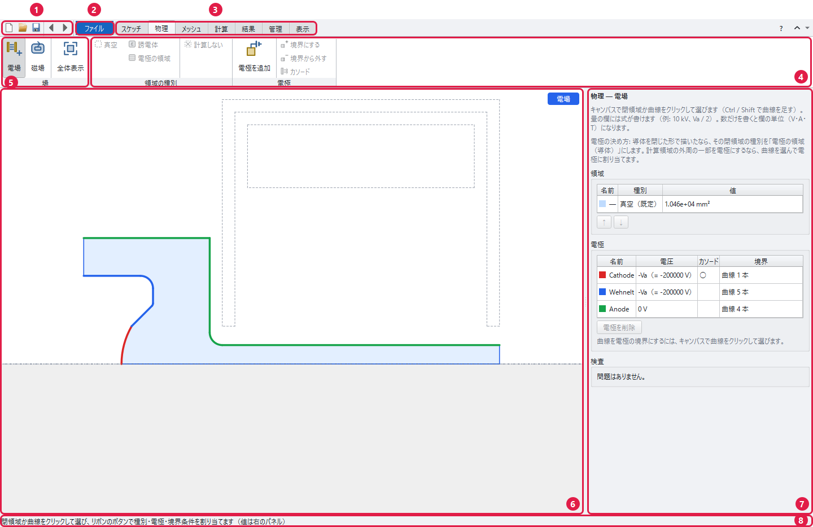
| 番号 | 名前 | 内容 |
|---|---|---|
| ① | クイック アクセス | 新規・開く・保存・元に戻す・やり直し |
| ② | ファイル | 新規・開く・最近使ったドキュメント・保存・名前を付けて保存・取り込み・書き出し・終了 |
| ③ | リボンのタブ | 作業の順に スケッチ / 物理 / メッシュ / 計算 / 結果。その右に 管理（パラメータ）と 表示。タブを替えると、画面がその作業のものに替わります |
| ④ | リボンのパネル | 今のタブの操作ボタン。ボタンにマウスを乗せると説明が出ます。今は押せないボタンは薄い色になります |
| ⑤ | 場 | 「電場」「磁場」のどちらの形状を扱うか。スケッチ・物理・メッシュのタブの左端にあります。隣の「全体表示」は、今の場の形状が入るように表示を合わせます（F キー） |
| ⑥ | 中央の画面 | 形状を描く・選ぶ画面（キャンバス）。右上に今の場の名前（電場 = 青、磁場 = 緑）が出ます。結果のタブでは結果の図に替わります |
| ⑦ | 右のパネル | 今のタブの設定の欄（物理: 領域と電極の表、メッシュ: 大きさと状態、計算: 収束グラフと設定、結果: 結果の一覧と表示の切り替え）。スケッチのタブでは出ません |
| ⑧ | ステータスバー | 今の操作の案内、計算の状態、マウスの位置の座標（z, r） |
表示の言語（日本語 / English）は、「ファイル」→「言語（Language）…」で選びます。TGUN を起動し直すと反映されます。
右上の「?」には「マニュアル」（F1 キー）と「このソフトについて」（版・試用の期限・利用条件・使っているオープンソースのライセンス）があります。その右の「∧」はリボンをタブの名前だけに畳みます（もう一度押すと戻ります）。
ウィンドウの題名にはモデルの名前が出ます。保存していない変更があると、名前の後ろに「*」が付きます。試用版では、使える期限（例:「試用版（2027-12-31 まで）」）も出ます。
中央の画面の操作
| 操作 | 動き |
|---|---|
| マウスホイール | マウスの位置を中心に拡大・縮小 |
| 中ボタン（ホイール）を押したままドラッグ | 表示の移動 |
| F キー（または「全体表示」） | 今の場の形状が入るように表示 |
もう一方の場の形状は、灰色の破線で重ねて表示されます（表示のタブの「もう一方の場」で消せます）。
表示のタブと管理のタブ
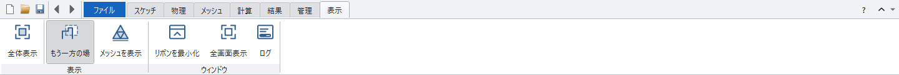
| ボタン | 内容 |
|---|---|
| 全体表示 | 今の場の形状（と軸）が入るように表示します（F キー）。結果のタブでは、結果の図を全体表示に戻します |
| もう一方の場 | もう一方の場（電場 / 磁場）の輪郭を、灰色の破線で重ねます / 隠します |
| メッシュを表示 | 作ってあるメッシュを形状に重ねます / 隠します |
| リボンを最小化 | リボンをタブの名前だけにします（Ctrl+F1。タブの名前のダブルクリックでも同じ） |
| 全画面表示 | 窓を画面いっぱいにします（F11） |
| ログ | メッシュ生成と計算のログを、画面の下に出します / 隠します |
管理のタブには「パラメータ」（パラメータの表。5.5 節）があります。表示と管理のタブは、開いても今の作業（スケッチ・物理…）を変えません。
4. チュートリアル: 例題を計算する
TGUN に付いている例題 gun_with_solenoid（ピアス型の電子銃 ＋ ヨークつきのソレノイド）を開き、メッシュを作り、計算して、結果を見るまでを一通りやってみます。計算は 1 回 15 秒ほどで終わります。
例題の構成（r-z の断面。寸法は mm）:
電場 カソード Cathode（-200 kV） 球面。半径 30、曲率半径 60
ウェネルト Wehnelt（-200 kV） カソードの縁から 45 度に開くフォーカス電極
アノード Anode（0 V） z = 70 の面と、ビームパイプ（半径 15、z = 300 まで）
磁場 コイル Coil（5000 A） z = 100〜280、r = 140〜190
ヨーク Yoke（磁性体・飽和） コイルを囲む厚さ 10 の鉄。z = 80〜300
カソードから出た約 77 A のビームを、半径 15 mm のビームパイプに通します。ソレノイドが無いとビームの半分がパイプの壁に当たり、ソレノイドを入れると全部が通ります（4.8 節で比べます）。
この例題の形状は、寸法とパラメータで決まっています。カソードの半径やアノードの位置、加速電圧、コイルの電流はパラメータなので、値を 1 つ書き換えるだけで形状や条件が変わります。
4.1 例題を開く
- 左上の「ファイル」→「開く」（Ctrl+O）を選びます。
- TGUN のフォルダ（
TGUN.exeのあるフォルダ）のexamples\gun_with_solenoid\gun_with_solenoid.tgunを選びます（開発環境ではTGUN_ver3\examples\gun_with_solenoid\gun_with_solenoid.tgun）。
例題の形状と設定がそのまま開きます。メッシュと計算の結果は入っていないので、この後で作ります。
ヒント: 同じフォルダの
gun_with_solenoid.tgunprojは、コマンドライン（付録 B）用の入力です。このモデルから作ったもので、そのままtgun run -pに渡せます。
4.2 名前を付けて保存する
計算を始める前に、「ファイル」→「名前を付けて保存…」（Ctrl+Shift+S）で、作業用のフォルダに別の名前で保存します（例: gun_tutorial.tgun）。こうすると、例題のフォルダは元のまま残ります。保存すると、モデルファイル gun_tutorial.tgun ができます。メッシュや計算の結果は、同じ名前のデータフォルダ
gun_tutorial.tgun.data に入ります（11 章）。
4.3 形状とパラメータを見る
スケッチのタブで、電場の形状を見てみます。薄い青に塗られた部分が、線で囲まれた領域（閉領域 = 真空の部分）です。左下の円弧がカソード（球面）、そこから斜めに上がる線がウェネルト、z = 70 mm の縦の線がアノードの面、右へ延びる細い部分がビームパイプです。下の辺が対称軸（r = 0）です。灰色の破線は、磁場の形状（ヨークとコイル）の輪郭です。
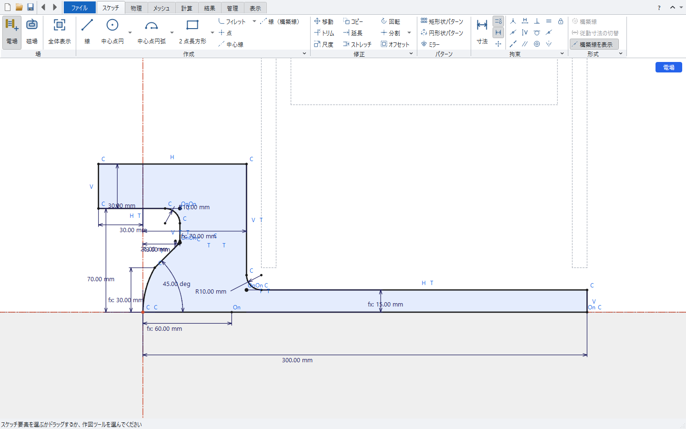
図の中の数字と矢印は寸法です。値の前に fx: の付いた寸法は、式（パラメータ）で決まっています。寸法をダブルクリックすると値や式（Rc2・d_an など）が出て、書き換えると形状がそれに合わせて動きます（5.4 節）。
管理のタブ →「パラメータ」を押すと、パラメータの表が出ます。表の上の組（寸法パラメータ）はスケッチの寸法で、下へスクロールすると、この例題のために作った「ユーザー パラメータ」の組があります。
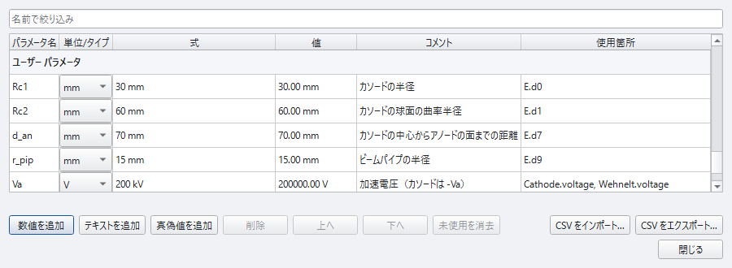
| パラメータ | 値 | 意味 |
|---|---|---|
Rc1 |
30 mm | カソードの半径 |
Rc2 |
60 mm | カソードの球面の曲率半径 |
d_an |
70 mm | カソードの中心からアノードの面までの距離 |
r_pip |
15 mm | ビームパイプの半径 |
Va |
200 kV | 加速電圧（カソードとウェネルトの電圧は -Va） |
I_coil |
5000 A | コイルの総電流 |
表の「式」を書き換えると、それを使っている寸法・電圧・電流がすぐに変わります（5.5 節）。ここでは見るだけにして、表を閉じます。
リボンの左端の「磁場」を押すと、磁場の形状に切り替わります。外側の大きな四角が空気の箱、中のコの字形がヨーク、その内側の四角がコイルです。左下の灰色の破線は、電場の形状の輪郭です。
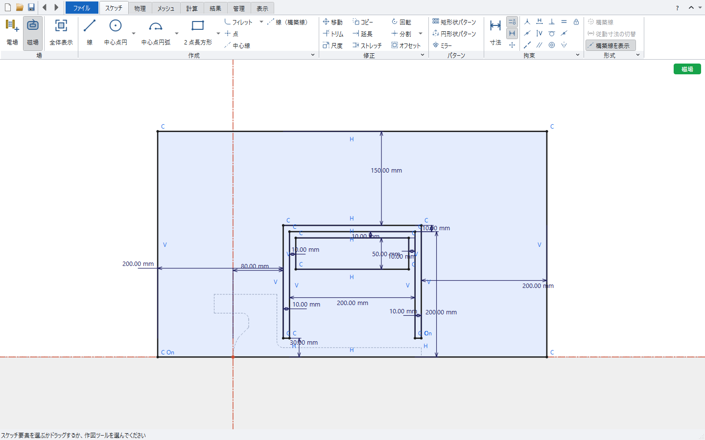
4.4 物理の指定を見る
物理のタブを開くと、曲線が境界の色で、閉領域が種別の色で描かれ、右にパネルが出ます。
電場（「場」が電場）では、右のパネルの電極の表に Cathode（カソードに ○）・Wehnelt・Anode があります。
Cathode と Wehnelt の電圧の欄には式 -Va が書いてあり、評価した値（-200000 V）が出ています。図の赤い線が Cathode、青い線が Wehnelt、緑の線が Anode の境界です。色の付いていない線（左上の短い辺と、右端の辺）は自然境界（∂V/∂n = 0）、下の辺は対称軸です。
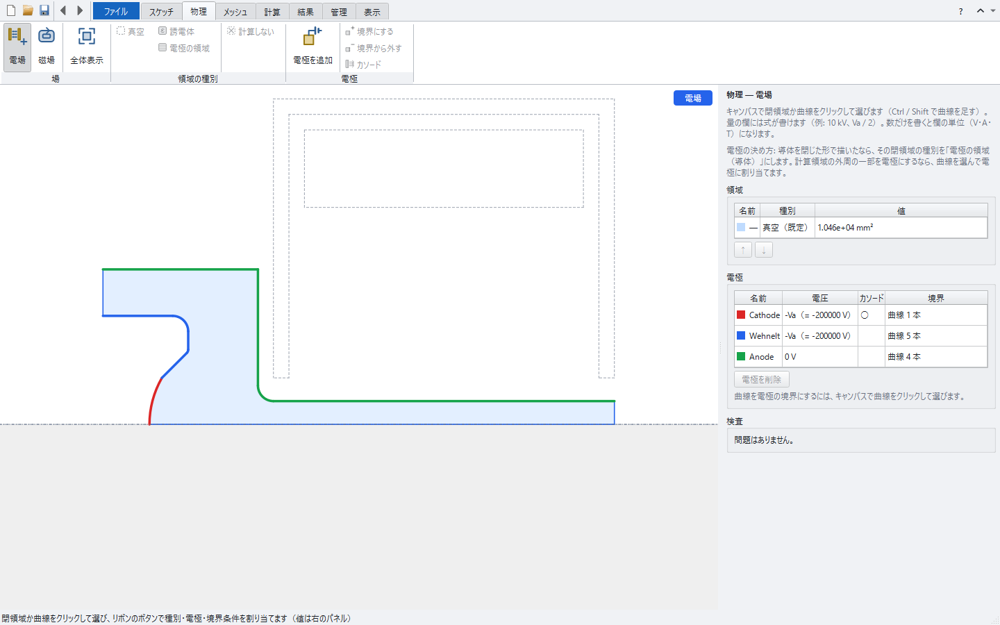
磁場（「場」が磁場）では、領域の表に Coil（コイル）と Yoke（磁性体（飽和））があります。Coil の総電流の欄にはパラメータ I_coil が書いてあります。外周の紫の破線は A = 0（磁束が横切らない境界）です。領域の表の行や、図の中の閉領域をクリックすると、その領域が選ばれ、表の下に種別・名前・値の欄が出ます（下の図はコイルを選んだところ）。
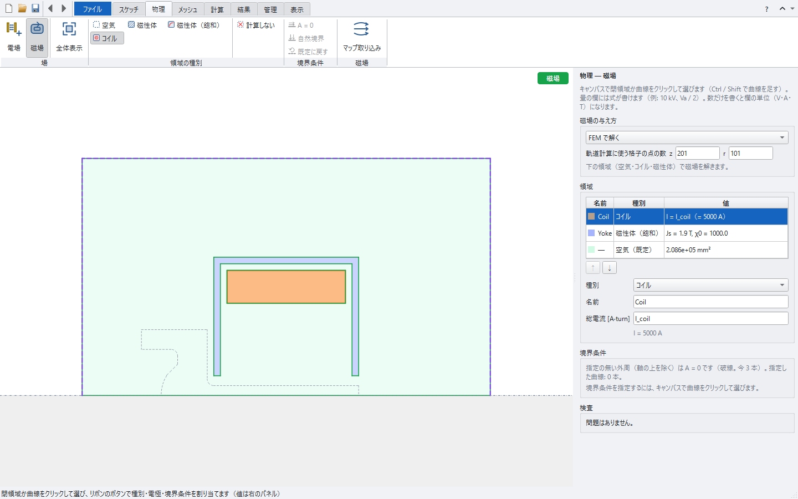
4.5 メッシュを作る
メッシュのタブ →「両方を生成」を押します。電場 → 磁場の順にメッシュ（細かい三角形の分割）が作られます。「メッシュを表示」を押すと、形状に重ねて表示されます。右のパネルに節点と要素の数・辺の長さが出ます。電場のメッシュは、カソードの近くだけ細かくしてあります（全体 2 mm、カソード近傍 1 mm。7 章）。
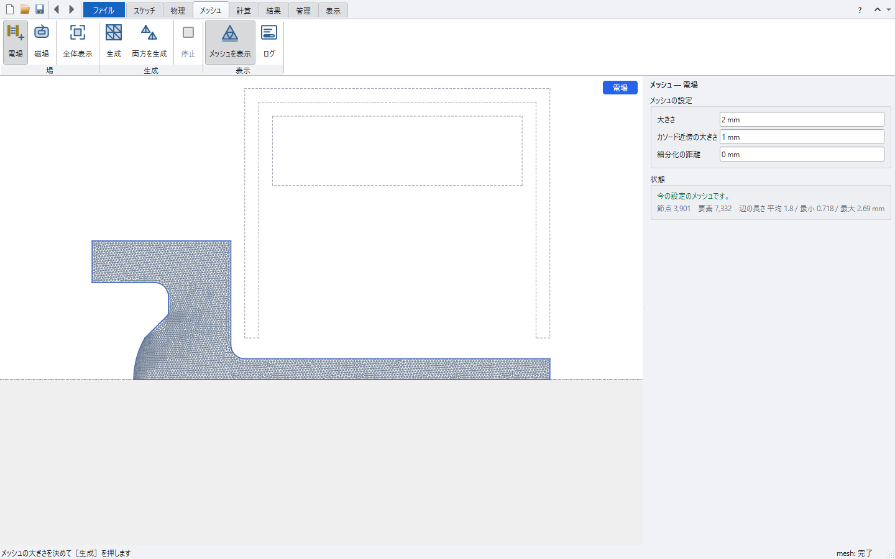
「場」を磁場に切り替えると、磁場のメッシュが見られます。
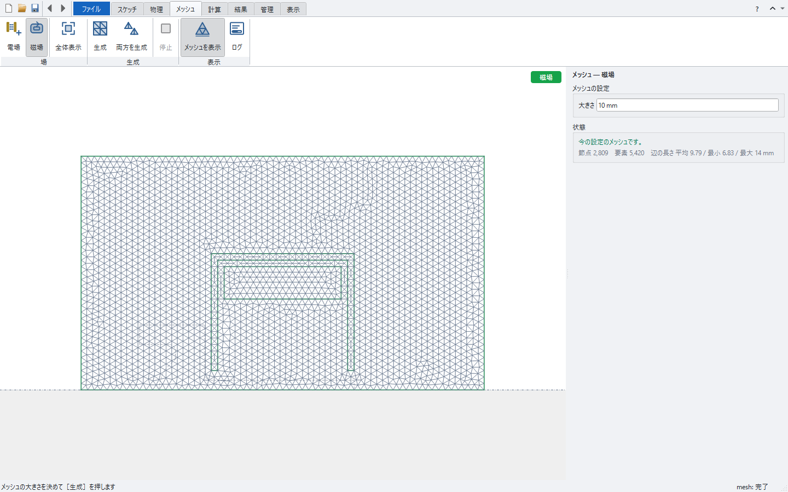
ヒント: メッシュを作らずにいきなり計算しても、計算の前に自動で作ります。メッシュのタブで先に作ると、細かさを確かめてから計算できます。設定が変わっていなければ、計算はそのメッシュをそのまま使います。
4.6 計算する
計算のタブ →「実行」を押すと、確認のダイアログが出ます。パラメータ・計算の設定・電極の電圧・コイルの電流・メッシュ・結果の出力先が一覧になっているので、確かめて「実行」を押します。
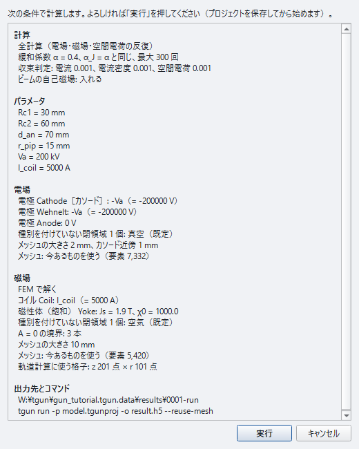
計算中は、右のパネルの収束グラフが反復ごとに伸びていきます。その上に「実行中: 反復 k/最大」と、そのときの電流 I_total が出ます。リボンの「ログ」を押すと、計算のログが画面の下に出ます。止めたいときは「停止」（次の反復の区切りで止まる）か「強制停止」を押します。
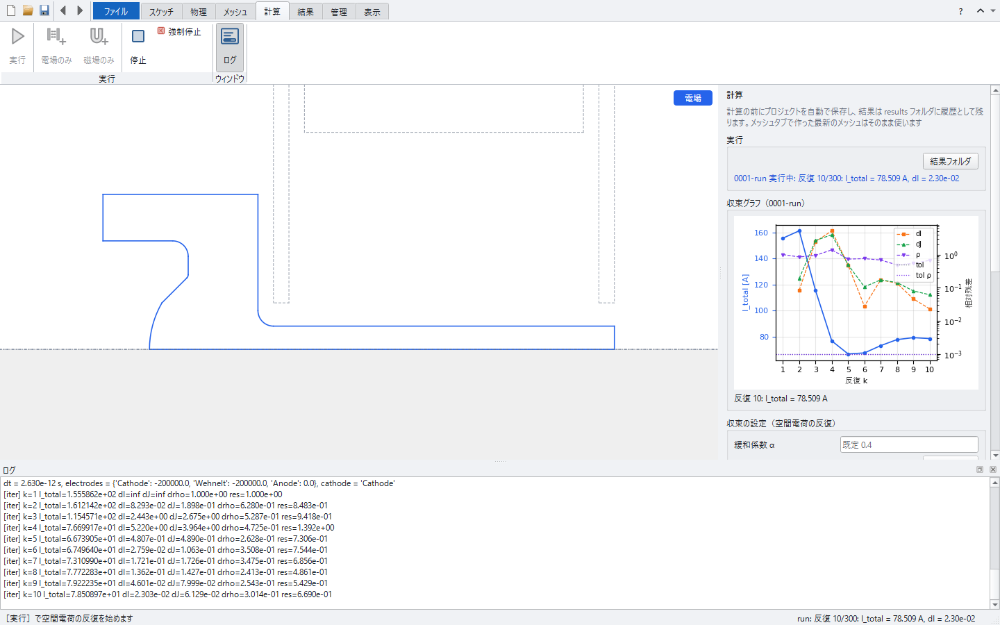
終わると「完了（収束）」になり、グラフの下に I_total・パービアンス・出口のエネルギーと半径・計算時間が出ます。この例題では、30 回ほどの反復で収束し、電流は約 76.9 A（パービアンス 0.86 µP）になります。
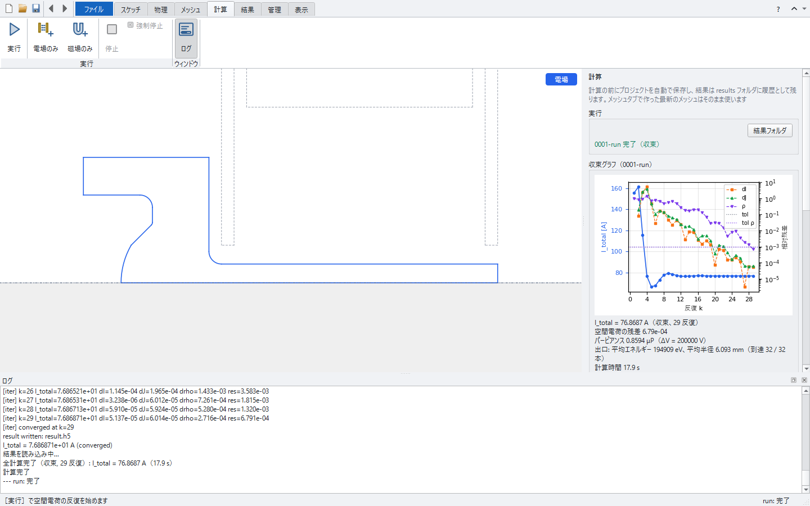
収束グラフの見方:
- 青い線（左の軸）: ビーム電流 I_total [A]。反復とともに一定の値に落ち着きます。
- dI / dJ / ρ（右の対数の軸）: 電流・放出電流密度・空間電荷の残差（相対値）。dI・dJ は「今の場が求めるカソードの電流」と「前の反復で使った電流」の差、ρ は「今の場で計算した軌道がつくる電荷」と「その場のもとになった電荷」の差です。dI・dJ が灰色の点線（tol）より、ρ が紫の点線（tol ρ）より小さくなると収束です。
- 縦の破線: 緩和係数 α を自動で変えた反復です。計算が発散しかけると α を半分にし（ログに「発散傾向を検知」）、その後 ρ が続けて減ると元の値へ戻します（「残差が減少を継続」）。
4.7 結果を見る
結果のタブを開くと、右上に結果の一覧、中央に結果の図が出ます。一覧の「0001-run 全計算［完了］」をクリックすると、その結果が表示されます。最初は電位 V の分布に、電子の軌跡（青）と電極の形状が重なっています。右のパネルには要約（電流・パービアンス・場の範囲・軸上の磁場のピーク）が出ます。
カソードから出た電子がアノードの孔に向かって絞られ、ビームパイプの中をソレノイドの磁場に導かれて進むのが分かります。表示する量（電界・空間電荷密度・磁場）の切り替えやプローブなどは 9 章で説明します。
4.8 条件を変えて比べる
計算の結果は、上書きされずに履歴として全部残ります。パラメータを変えて計算し直し、比べてみましょう。ここでは、コイルの電流を 0 にして、ソレノイドの無い場合を計算します。
- 管理のタブ →「パラメータ」でパラメータの表を開き、
I_coilの式を0 Aに書き換えて Enter を押します。 - 計算のタブ →「実行」。確認のダイアログに「コイルの電流がすべて 0 なので、磁場なしで計算します」と出ます。そのまま実行すると、結果「0002-run」ができます。
- 結果のタブで結果を選び、右のパネルの下の「名前を変更…」で、分かりやすい名前（例: 「コイル 5000 A」「コイル 0 A」）を付けます。
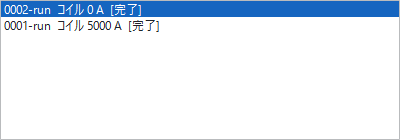
一覧で結果をクリックすると、表示を切り替えられます。ソレノイドが無いと、ビームは自分の空間電荷で広がり、外側の電子がビームパイプの壁に当たります（放出した電流のうち、出口まで届くのは半分ほど）。
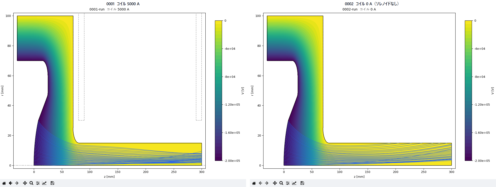
比べ終わったら、I_coil を 5000 A に戻します。
ヒント: 同じようにして、
d_an（アノードの位置）やVa（加速電圧）を変えると、電流がどう変わるかを比べられます。結果には、計算したときのパラメータの値が記録されます（結果のタブの要約）。コマンドラインからパラメータを振って自動で計算する方法は、付録 B の B.8 節・B.9 節にあります。
これでチュートリアルは終わりです。次の章からは、自分の電子銃を計算するための操作を詳しく説明します。
5. 形状を描く（スケッチ）
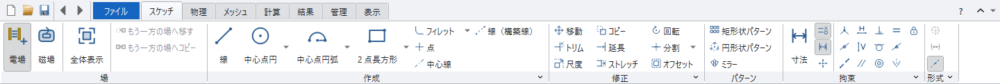
スケッチのタブでは、今の場（電場 / 磁場）の形状を描きます。描く前に、左端の「場」でどちらに描くかを確かめてください。作図・拘束・寸法の仕組みは、3D CAD の EMRM-CAD のスケッチと同じものです（Autodesk Inventor に近い操作です）。
- 作成: 線・円・円弧・長方形などを描きます。
- 修正: 描いた図形を動かす・切る・延ばす・複写するなど。
- パターン: 並べて複写・鏡像。
- 拘束: 寸法と、図形どうしの関係（水平・平行・一致…）。
- 形式: 構築線（補助の線）への切り替えなど。
5.1 作図の基本
- 「作成」のパネルでツールを選びます（▼ の付いたボタンは、押すと仲間のツールの一覧が出ます）。ステータスバーに、次の操作が案内されます。
- 画面をクリックして、点を順に決めます。既存の点・線の近くをクリックすると、端点・中点・線の上などに吸い付きます。
- 図形ができたら、続けて次の図形を描けます。Esc でツールを終えます。
| ツール | 使い方 |
|---|---|
| 線（L キー） | 始点 → 次の点 → …と続けて描きます（連続線）。ダブルクリックか Enter で終わります。最初の点をクリックして閉じたときも終わります |
| 中心点円 ▼ | 中心 → 円周上の点。▼ に 3 点円・接線円 |
| 中心点円弧 ▼ | 中心 → 始点 → 終点。▼ に 3 点円弧・接線円弧（線の端から滑らかにつながる円弧） |
| 2 点長方形 ▼ | 対角の 2 点。4 辺に水平・垂直の拘束が付きます。▼ に 3 点長方形・スロット・ポリゴンなど |
| フィレット ▼ | 線と線の角を丸めます（半径を入力してから、角か 2 本の線をクリック）。▼ に面取り |
| 点 | 点を置きます |
| 線（構築線）・中心線 | 補助の線（破線）。閉領域の輪郭にはなりません |
作図中は、画面の左上に入力ウィンドウが出ます。マウスで位置を決める代わりに、数値を打って形を決められます（下の図は、線の 1 点目を置いたところ。長さと角度の欄があります）。
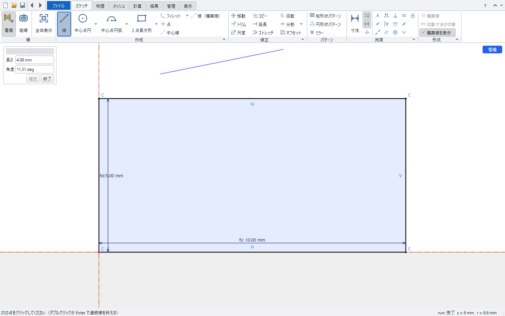
- Tab で次の欄に移り、値を打って Enter で確定します。打った値は寸法として残ります。
- 欄には式も打てます（
25 mm、40 + 2 * 5、パラメータの名前Lgap）。 - 水平・垂直に近い向きで線を引くと、水平・垂直の拘束が自動で付きます。端点を既存の点に合わせると、一致の拘束でつながります。Ctrl を押しながらクリックすると、そのクリックでは拘束を付けません。
注意: 計算に使える曲線は線・円・円弧です。スプライン・楕円・文字は使えません（ボタンもありません）。
5.2 閉領域（計算する範囲）
線で囲まれた領域が自動で見つけられ、薄い青で塗られます。これが閉領域で、計算する範囲の単位です。塗られない場合は、輪郭が閉じていません（12 章）。
- 線どうしは、端点が一致してつながっている必要があります。つながっていない端点は、橙の大きな点で表示されます。
- 線が交差していても、曲線は切られません。交差で分かれた領域が、それぞれ別の閉領域になります（たとえば、空気の箱の中にコイルの四角を描くと、内側と外側が別の閉領域になります）。
- 対称軸の上の辺も描いてください（軸の上の点には、点を軸の上に保つ拘束が自動で付きます）。形状を r < 0 にはみ出させないでください（検査で誤りになります）。
5.3 拘束
拘束は、図形どうしの関係を決めて形を保つ決まりです。「拘束」のパネルのアイコンで付けます（アイコンにマウスを乗せると名前が出ます）。
| 拘束 | 画面の記号 | 意味 |
|---|---|---|
| 一致 | C | 2 点を一致させます（原点にも付けられます） |
| 点を要素上に | On | 点を線・円・円弧・軸の上に置きます |
| 同一直線上 | ≡ | 2 本の線を同一直線上に置きます |
| 水平 / 垂直 | H / V | 線（または 2 点）を水平 / 垂直にします |
| 平行 / 直交 | // / ⊥ | 2 本の線を平行 / 直交にします |
| 正接 | T | 線と円・円弧、または円・円弧どうしを接させます |
| 同心円 | ◎ | 2 つの円・円弧の中心を一致させます |
| 等しい | = | 2 本の線の長さ、または 2 つの円・円弧の半径を等しくします |
| 中点 | M | 点を線か円弧の中点に置きます |
| 対称 | ][ | 2 つの点・線・円・円弧を、ある線に対して対称にします |
| 固定 | F | 点か要素を今の位置に固定します |
付け方は 2 通りです。
- 先に要素を選んで（Ctrl を押しながらクリックで追加）、拘束のボタンを押す。
- 先に拘束のボタンを押して、要素を 1 つずつクリックする（必要な数がそろうと付きます。Esc で終わり）。
線の色で、形がどこまで決まっているかが分かります。青い細い線はまだ動かせる（寸法や拘束が足りない）、 黒い太い線は形が全部決まっている、赤い線は拘束が多すぎるか矛盾しています。すでにある拘束と矛盾する拘束を付けようとすると、競合のダイアログが出て、形は変わりません。
5.4 寸法
寸法は、長さ・角度・半径などの値で形を決める拘束です。
- 「寸法」（D キー）を押します。
- 寸法を付ける線・円・点などをクリックします（2 つ選ぶときは順にクリック）。
- 寸法を置く位置をクリックします。入力ウィンドウが出るので、値（式も可）を入れて Enter を押します。
| 選ぶもの | 付く寸法 |
|---|---|
| 線 1 本、または 2 点 | 長さ（置く位置で水平・垂直にもなります） |
| 点と線 | 点から線までの距離 |
| 2 本の線 | 角度（平行な線は距離） |
| 円 / 円弧 | 直径 / 半径 |
| 原点と点 | 水平・垂直の距離（座標） |
- 寸法の値を直すには、画面の寸法の数字をダブルクリックします。
- 値にパラメータの名前や式を入れると、寸法の文字に
fx:が付き、パラメータに追従します。 - 入力ウィンドウの「従動（参照）」にチェックを入れると、形を決めずに今の値を測るだけの寸法（括弧付き）になります。
例: 平板ダイオード（幅 Lgap = 10 mm、高さ Rc = 5 mm）を、パラメータと寸法で決めたところ。左下の角は原点に一致させてあり、線が黒いので形は全部決まっています。
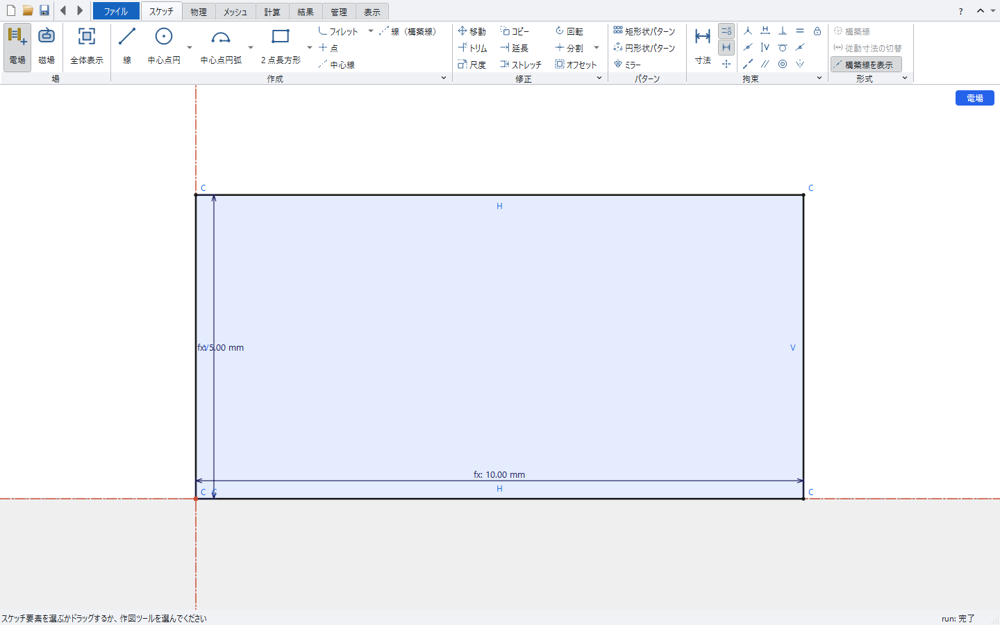
5.5 パラメータと式
管理のタブ →「パラメータ」で、パラメータの表が開きます（どのタブからでも開けます。開いたまま作業できます）。
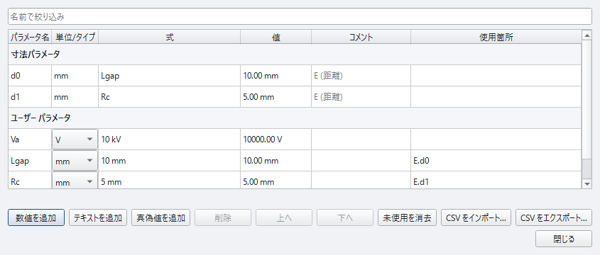
- ユーザー パラメータ: 自分で作るパラメータ。「数値を追加」で行を足し、名前・単位・式を入れます。
- 寸法パラメータ: スケッチの寸法（自動で d0・d1… の名前が付きます）。式の欄でパラメータと結べます。
- パラメータは、寸法のほか、電極の電圧・コイルの電流・比誘電率・メッシュの大きさなどの欄で使えます。電場と磁場で共通です。
- パラメータを変えると、それを使っている形状や値がすべて追従します。
式の書き方
| 書き方 | 例 |
|---|---|
| 単位付きの数 | 10 mm・10 kV・30 deg・2.15 T・1000 A |
| 計算 | Lgap / 2・2 * Rc + 1 mm・sqrt(2) * Rc |
| 関数 | sin・cos・tan（角度は度。sin(30 deg) も sin(30) も 0.5）・sqrt・abs・min・max など |
単位の決まり
- 値の欄（電圧・電流・メッシュの大きさなど）に数だけを書くと、その欄の単位が付きます（電圧の欄に
10000→10000 V）。 - パラメータは単位付きで作ります（電圧に使うなら
Va = 10 kV）。単位の無いパラメータを電圧などの欄に書くと誤りになります（黙って V とはみなしません）。直すには、パラメータに単位を付けるか、欄にVn * 1 Vのように書きます。 - 式を書いた欄には、下に評価した値（
= 10000 V）が出ます。
5.6 選ぶ・動かす・消す
| 操作 | 結果 |
|---|---|
| クリック | 点・曲線・拘束の記号・寸法を 1 つ選びます。Ctrl で切り替え、Shift で追加 |
| 空白から左 → 右へドラッグ | 枠に全体が入る要素を選びます |
| 空白から右 → 左へドラッグ | 枠に掛かる要素を選びます |
| 選んだ点・曲線をドラッグ | 拘束を保ったまま動かします |
| Delete | 選んだ要素・拘束・寸法を消します |
「修正」のパネルには、移動・コピー・回転・トリム（T キー。交点までの余分を切る）・延長・分割・尺度・ストレッチ・オフセットがあります。「パターン」のパネルには、矩形状・円形状のパターンとミラーがあります。線を補助の線にするには、選んで「形式」の「構築線」を押します（もう一度押すと戻ります）。
操作を間違えたときは「元に戻す」（Ctrl+Z）、やり直すときは Ctrl+Y です。
5.7 磁場の形状を描く
「場」を磁場にして、空気の箱（外周）とコイル・磁性体を描きます。
- 空気の箱は、コイルや磁性体を十分に囲み、外周で磁場が小さくなる大きさにします。軸（r = 0）から描き始めてください。
- 電場の形状は、灰色の破線で重ねて表示されます。電極の位置に合わせてコイルを置くときの目安になります。
- 電子が飛ぶ範囲（電場の形状）が、磁場の形状の範囲に入っているようにしてください。
- 寸法やパラメータを電場と共通にしておくと（例: コイルの位置を電極の位置のパラメータで決める）、片方を変えたときにもう片方も追従します。
描く場を間違えたとき（もう一方の場へ移す）
磁場の形のつもりで電場のスケッチに描いてしまった、というときは、描き直さずに移せます。
- 移す曲線・点を選びます（ドラッグで囲むと、まとめて選べます）。
- スケッチのタブの「場」のパネルの「もう一方の場へ移す」を押します。選んだ形が、もう一方の場（電場なら磁場、磁場なら電場）のスケッチの同じ位置へ移ります。元を残したいときは「もう一方の場へコピー」を押します。
- 拘束と寸法も一緒に移ります。原点や軸からの寸法、パラメータを使った式（
Rc1・W / 2など）もそのままです。 - 選んでいない曲線との間の拘束・寸法は外れます（外れた数がステータスバーに出ます）。ほかの寸法を参照している式は、そのときの値の数値になります。
- 移した曲線に付けていた電極・境界条件の割り当ては外れます。移した先で、物理のタブで付け直してください。
- 「元に戻す」（Ctrl+Z）の 1 回で、移す前に戻ります。
ヒント: 普通の切り取り・コピー・貼り付け（Ctrl+X・Ctrl+C・Ctrl+V）も、場を切り替えて使えます。ただし、こちらは原点・軸に付けた拘束と寸法が外れ、寸法の式は数値になります（別のモデルにも貼れるようにするためです）。
6. 物理を指定する
物理のタブでは、閉領域に種別（真空・コイルなど）を、曲線に電極や境界条件を割り当てます。操作はリボンのボタン、値（電圧・電流など）は右のパネルの欄です。
- 閉領域を選ぶ: 閉領域の中の、曲線の無い所をクリック（右のパネルの領域の表の行のクリックでも選べます）。
- 曲線を選ぶ: 曲線をクリック（Ctrl か Shift を押しながらで複数）。
- 物理のタブでは形状は動かせません。直すときはスケッチのタブに戻ります。
6.1 電場: 領域の種別
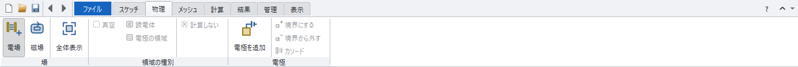
閉領域を選ぶと、リボンの「領域の種別」のボタンが押せるようになり、今の種別のボタンが押した状態になります。
| 種別 | 内容 |
|---|---|
| 真空 | 電子が飛ぶ範囲（εr = 1）。種別を付けていない閉領域は真空です（表では「真空（既定）」） |
| 誘電体 | 絶縁物（碍子など）。比誘電率 εr を右のパネルで入れます |
| 電極の領域 | 導体のかたまり（ウェネルトや電極の本体）。計算領域（メッシュ）から外れ、輪郭の曲線がその電極の境界になります。どの電極かは右のパネルで選びます（「＋ 新しい電極」で新しく作れます） |
| 計算しない | 計算領域から外します（電極でもない、使わない閉領域） |
6.2 電場: 電極を決める
電極の決め方は 2 通りあります。組み合わせてもかまいません。
- 導体を閉じた形で描いたとき: その閉領域を「電極の領域」にします（6.1 節）。輪郭の全体がその電極になります。
- 計算領域の外周の一部を電極にするとき: 曲線を選んで、電極の境界にします（下の手順）。
曲線を電極の境界にする
- 電極にしたい曲線を選びます（例: カソード面の線）。
- リボンの「電極を追加」を押します。新しい電極ができ、選んだ曲線がその境界になります。既にある電極に足すときは、右の表でその電極の行を選んでから「境界にする」を押します。
- 右のパネルの表の下の欄で、名前と電圧を入れます（数値または式。例
10 kV、Va、Va / 2）。 - 電子を放出する電極は、表で選んで「カソード」を押します（右のパネルのチェックでも同じ）。
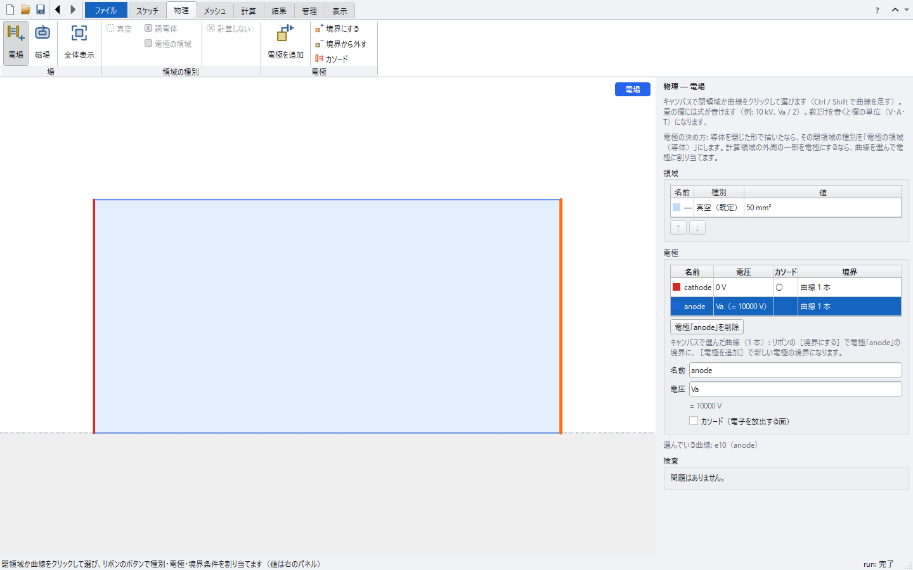
| ボタン | 内容 |
|---|---|
| 電極を追加 | 電極を 1 つ足します。曲線を選んでいれば、それがその電極の境界になります |
| 境界にする | 選んだ曲線を、右の表で選んだ電極の境界にします（ほかの電極からは外れます） |
| 境界から外す | 選んだ曲線を、電極の境界でなくします |
| カソード | 右の表で選んだ電極をカソードにします / やめます |
- カソードはちょうど 1 つです。別の電極をカソードにすると、前のカソードは外れます。
- 電極の表の「境界」の列に、その電極の境界（「領域 1、曲線 2 本」など）が出ます。図の中の曲線は、電極の色で描かれます。
- 電極の領域の輪郭の一部だけを別の電極にすることもできます（例: カソード面）。曲線を直に割り当てた指定が優先されます。
- 電極を消すには、表で選んで「電極「名前」を削除」を押します。
- 電極にしていない外周の曲線は、自然境界（∂V/∂n = 0）です。対称軸も同じです。
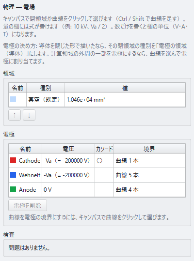
6.3 磁場: 磁場の与え方
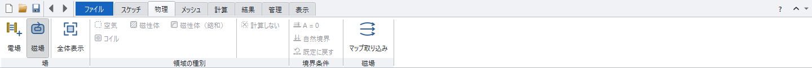
右のパネルの一番上で、磁場をどう与えるかを選びます。
| 与え方 | 内容 |
|---|---|
| FEM で解く | 磁場の形状に描いたコイル・磁性体から、磁場を計算します。下の「軌道計算に使う格子の点の数」は、電子の追跡に使う磁場マップの分割数（z × r）です |
| 磁場マップを取り込む | 取り込んだ磁場マップを使います（10.3 節） |
| なし | 磁場なしで計算します |
「磁場マップを取り込む」と「なし」のときは、磁場の形状（領域・境界条件）は計算に使いません。
6.4 磁場: コイル・磁性体・境界条件
閉領域を選んで、リボンの「領域の種別」のボタンを押し、右のパネルで値を入れます。
| 種別 | 値 |
|---|---|
| 空気 | μr = 1、電流 0（種別を付けていない閉領域は空気です。表では「空気（既定）」） |
| コイル | 総電流 [A·turn]（巻数 × 電流）。式も使えます |
| 磁性体 | 比透磁率 μr（一定） |
| 磁性体（飽和） | 飽和磁化 Js [T] と初期磁化率 χ0（6.6 節） |
| 計算しない | 計算領域から外します |
コイル OFF: コイルの電流を 0 にすると、そのコイルは磁場を作りません。すべてのコイルが 0 のときは磁場が 0 （磁性体も磁化しない）なので、全計算は磁場なしで行います。右のパネルと実行の前の確認に、その旨が出ます。このとき「磁場のみ」の計算と磁場のメッシュは作りません（作る磁場がないため）。
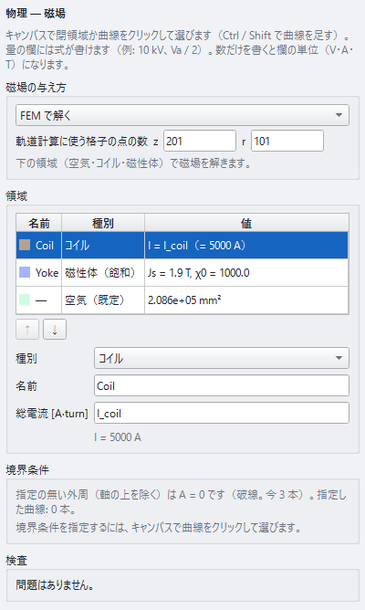
境界条件（曲線を選んで、リボンのボタンで）
| ボタン | 内容 |
|---|---|
| A = 0 | 磁束がその線を横切りません。空気の箱の外周に使います |
| 自然境界 | 磁束がその線に垂直に出入りします（対称面など） |
| 既定に戻す | 指定を消します |
何も指定しなければ、軸の上を除く外周は A = 0 です（図では破線）。ふつうは、境界条件を指定する必要はありません。
6.5 領域の表と検査
- 並べ替え: 領域の表の行を選び、表の下の ↑ ↓ で上下に動かせます。コイルを並び順にそろえるときなどに使います。表示の順番だけで、計算には影響しません（実行の前の確認も同じ並びになります）。
- 名前: 領域を選ぶと、表の下の欄で名前を付けられます。
- 検査: 右のパネルの一番下に、今の場の形状と物理の指定の検査の結果がいつも出ています。問題が無ければ「問題はありません。」です。主な内容:
- 電場: カソードが無い・2 つ以上ある、電極の領域の電極が選ばれていない
- 磁場: コイルの電流がすべて 0（全計算は磁場なし）
- 共通: 計算領域が無い、形状が軸の下（r < 0）にはみ出している、割り当てた閉領域が見つからない（形を変えた後。割り当て直してください）
6.6 磁性体の飽和（Fröhlich–Kennelly モデル）
磁場の強い所では、磁性体（鉄など）の磁化が飽和して、透磁率が下がります。種別を「磁性体（飽和）」にした閉領域は、この飽和を Fröhlich–Kennelly（フレーリヒ・ケネリー）モデルで計算します。
M = χ0 H / (1 + χ0 H / Ms) B = μ0 (H + M) Js = μ0 Ms
- 飽和磁化 Js [T]: 磁化がどこまで大きくなるか（強い磁場での μ0M の上限）。純鉄で約 2.15 T、パーメンジュール（FeCo）で約 2.35 T。
- 初期磁化率 χ0: 弱い磁場での磁化のしやすさ（原点での dM/dH）。初期比透磁率は 1 + χ0 です。
- H = Ms/χ0 で M はちょうど半分の飽和（M = Ms/2）になります。これが「膝」の目安です。強い磁場では B ≈ μ0 H + Js になり、それ以上は真空と同じ傾き μ0 でしか増えません。
値の入れ方
- 磁場で閉領域を選び、リボンの「磁性体（飽和）」を押します。
- 右のパネルの「飽和磁化 Js」と「初期磁化率 χ0」に値を入れます（数値またはパラメータの式）。
- 入れた値の B–H 曲線が下に出ます。赤い点が膝の目安、破線が Js です。H の軸は対数の目盛りです（「H の軸を対数で表示する」を外すとリニアの目盛り）。カタログや測定の B–H 曲線と見比べて、値が妥当か確かめてください。
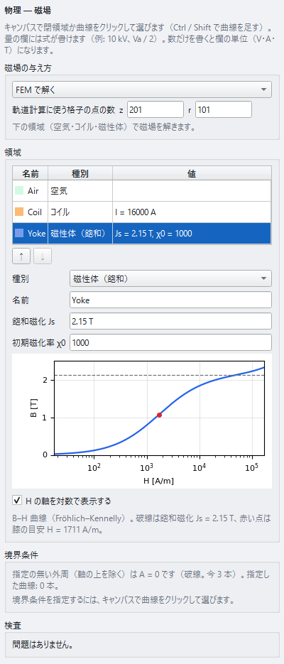
B–H 曲線から値を合わせる（Kennelly プロット）
このモデルでは H / M が H の 1 次式（H / M = 1/χ0 + H/Ms）になります。実測の B–H 曲線から M = B/μ0 − H を求め、横軸 H・縦軸 H/M のグラフに点を打って直線を引くと、
- 直線の傾き = 1/Ms（Js = μ0 / 傾き）
- 縦軸の切片 = 1/χ0
が得られます。膝から飽和の範囲の点で合わせるのが実用的です。このモデルは膝が実際の鉄よりなだらかで、低い磁場での立ち上がり（初透磁率が最大透磁率より小さいこと）は表せません。χ0 は「モデルの原点の傾き」で、材料の初透磁率とは一致しないことがあります。
計算
磁性体（飽和）があると、磁場の計算は非線形の反復（ニュートン法）になります。ふつうは数回〜十数回で収束し、時間は数秒増えるだけです。ログに反復ごとの行（[b-nl] k=1 res=… step=… dA=… sat_max=…。res は残差、
sat_max は最大の飽和度）と、最後に「非線形の磁場計算: N 回で収束しました」が出ます。収束しなかったときは警告を出し、最後の解で計算を続けます（結果の要約にも出ます。12 章）。
結果の見方
結果のタブの表示量に「飽和度 M/Ms」と「実効の比透磁率 μr」が加わります（磁性体（飽和）がある結果だけ）。どちらも要素ごとの値で、要素ごとに塗り分けます。飽和度は 0（飽和していない）〜1（完全に飽和）の色です。要約には「磁性体の飽和: 非線形の反復 N 回で収束（最大の飽和度 …）」が出ます。プローブ（ダブルクリック）では、磁性体の中の点の μr,eff・M/Ms・|H| も出ます。
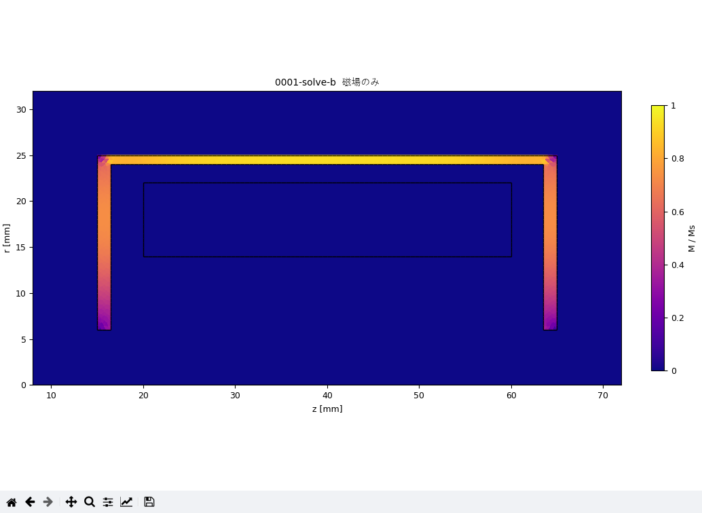
注意
- 磁性体の周りのメッシュ: 磁性体の外側の、磁束を囲む磁場の無い所では、メッシュの粗さによる誤差が磁性体の比透磁率の分だけ大きく効きます（μr = 1000 の鉄心で、メッシュ 0.5 mm だと数 % の誤差）。磁性体を使うときは、磁場のメッシュの大きさを小さくして、結果が変わらないことを確かめてください。飽和すると実効の比透磁率が下がるので、この誤差も小さくなります。
- 飽和は、ポールピースの先など局所的に起きます。そこが薄いときは、厚さに対してメッシュを十分細かくしてください。
- ヒステリシス（磁化の履歴）・残留磁化（永久磁石）・異方性は扱いません。
例題で試す（例題 solenoid_yoke。配布版では TGUN のフォルダの examples\solenoid_yoke）
コイルを薄い磁性体のヨーク（外筒と、軸の近くまで伸びる両端の板）で囲んだ、磁場だけの例題です。
- 「ファイル」→「開く」で
solenoid_yoke.tgunを開き、作業用のフォルダに名前を付けて保存します（4.2 節と同じ）。 - 物理のタブで「場」を磁場にしてヨークの閉領域を選ぶと、Js = 2.15 T・χ0 = 1000 と B–H 曲線が出ます。
- 計算のタブの「磁場のみ」で計算します（数秒）。ログに非線形の反復の行が出て、8 回ほどで収束します。
- 結果のタブで表示量を「飽和度 M/Ms」にすると、ヨークの両端の板と外筒が 0.6〜0.9 ほど飽和しているのが分かります。
軸上の Bz の最大は約 0.431 T です。ヨークの種別を「磁性体」（μr 一定 = 1000）に変えて計算し直すと約 0.45 T になり、飽和を考えないと磁場を 5% ほど大きく見積もることが分かります。コイルの電流を 16000 から 4000 A に下げると、ヨークはほとんど飽和せず、磁場は電流にほぼ比例します。
7. メッシュを作る
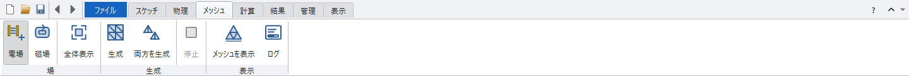
計算は、計算領域を細かい三角形（メッシュ）に分けて行います。メッシュのタブでは、計算の前にメッシュを作って、細かさと規模（要素の数）を確かめられます。設定は場（電場 / 磁場）ごとです。
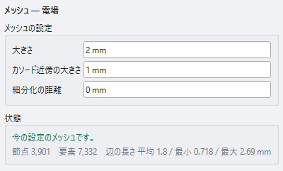
| 項目 | 内容 |
|---|---|
| 大きさ | 三角形の辺のおよその長さ（例 0.5 mm）。数値または式。小さいほど精度は上がりますが、計算は遅くなります |
| カソード近傍の大きさ（電場） | カソードの曲線の近くだけ、この大きさまで細かくします（0 mm = 使わない）。放出電流の精度が大きく上がります（平板ダイオードで誤差 +2.4% → +1.4%） |
| 細分化の距離（電場） | カソードからこの距離までを細かくします（0 mm = 自動で、カソード近傍の大きさの 10 倍） |
欄に書いた値は、Enter を押すか、別の欄に移ると反映されます。書いたままリボンの「生成」などのボタンを押しても、その値が反映されてから始まります。
カソード近傍を細かくしたときの欄（DGUN の取り込みの例）:
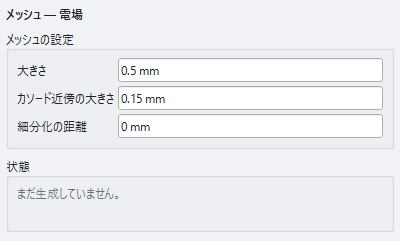
| ボタン | 内容 |
|---|---|
| 生成 | 今の場のメッシュを作ります |
| 両方を生成 | 電場と磁場を続けて作ります |
| 停止 | 生成を止めます（生成中だけ押せます） |
| メッシュを表示 | 作ったメッシュを形状に重ねて表示します / 隠します |
| ログ | メッシュ生成のログを画面の下に出します |
一度も保存していないモデルでは、先に保存先を聞かれます（メッシュはモデルの隣のデータフォルダに置くためです）。
右のパネルの「状態」に、メッシュの状態と統計（節点・要素の数、辺の長さの平均・最小・最大）が出ます。
- 「今の設定のメッシュです。」: 今の形状と設定のメッシュです。計算はこれをそのまま使います（作り直さない）。
- 形状・領域・境界・メッシュの設定を変えると、作り直しが要る旨が出ます（計算を始めると自動で作ります）。電極の電圧やコイルの電流を変えただけなら、作り直しは要りません。
- 「コイルの電流がすべて 0 なので、磁場のメッシュは要りません。」: コイル OFF（6.4 節）。
- 「磁場を FEM で解かない設定なので、磁場のメッシュは要りません。」: 磁場の与え方が「なし」か「磁場マップを取り込む」。
ヒント: 最初は粗いメッシュ（例 0.5 mm）で全体の様子を見て、必要に応じてカソード近傍を細かくするのが効率的です。メッシュを細かくしたら、計算の緩和係数 α も小さくします（8.3 節）。
注意: 磁性体（μr が大きい材料）の周りでは、磁場のメッシュの粗さによる誤差が大きく効きます。磁場のメッシュの大きさを小さくして、結果が変わらないことを確かめてください（6.6 節の注意）。
8. 計算する
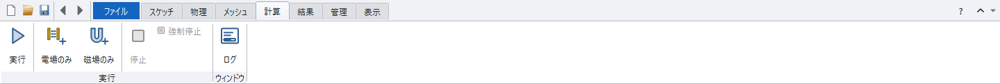
8.1 計算の種類
| ボタン | 内容 |
|---|---|
| 実行 | 全計算。磁場 → 空間電荷の反復（放出・追跡）まで全部を計算します。ふつうはこれを使います |
| 電場のみ | 空間電荷なしの電場（ラプラス方程式）だけを解きます。電極の配置や電界の確認に |
| 磁場のみ | 磁場（コイル・磁性体）だけを解いて、磁場マップを作ります。コイルの配置や磁性体の飽和の確認に |
| 停止 | 次の反復の区切りで止めます（計算中だけ押せます。結果は保存されません） |
| 強制停止 | 計算の処理をすぐに終了します（結果は保存されません） |
| ログ | 計算のログを画面の下に出します / 隠します |
計算のボタンを押すと、実行の前の確認（4.6 節）が出ます（一度も保存していないモデルでは、先に保存先を聞かれます）。確認には、パラメータの値・電極の電圧・コイルの電流・計算の設定・メッシュ（今あるものを使うか、作り直すか）・出力先とコマンドが並びます。「実行」を押すと、モデルを自動で保存してから計算が始まります。計算は別のプロセスで動くので、計算中も画面は固まらず、前の結果の表示などができます。
物理の指定に誤りがあると、計算は始まらず、理由が出ます（12 章）。
8.2 計算中と計算の後
右のパネルに、状態・収束グラフ・要約が出ます（見方は 4.6 節）。計算が終わると、結果のタブの一覧に新しい結果が増えます。
- 最大反復回数に達して収束しなかった結果は、要約に「未収束」と出ます。
- 右のパネルの「結果フォルダ」で、結果のフォルダ（result.h5・log.txt など）を開けます。
- 磁性体（飽和）があるときは、最初の磁場の計算で、ログに非線形の反復の行（
[b-nl] …）が出ます（6.6 節）。収束グラフは空間電荷の反復のものです。
8.3 計算の設定
右のパネルの下の方で、計算の設定を変えられます。空欄の欄は既定値（薄い字の「既定 …」）を使います。値を入れて Enter で反映、空にすると既定に戻ります。設定はモデルに保存されます。
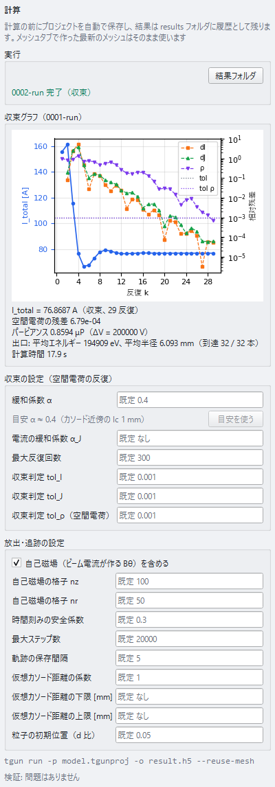
収束の設定（空間電荷の反復）
| 項目 | 内容 |
|---|---|
| 緩和係数 α | 空間電荷 ρ を毎回どれだけ新しい値に入れ替えるか（0 < α ≤ 1）。小さいほど安定しますが、収束は遅くなります。メッシュが細かいほど小さくします |
| 目安 α ≈ … / 目安を使う | メッシュの大きさ（カソード近傍を細かくしているならその大きさ）から求めた α の目安。「目安を使う」で α に入ります |
| 電流の緩和係数 α_J | 放出電流密度 J の緩和係数（空欄なら α と同じ） |
| 最大反復回数 | 反復の上限（既定 300）。達すると、収束していなくても結果を保存します |
| 収束判定 tol_I / tol_J | 電流 I と放出電流密度 J の残差の大きさ（既定 0.001） |
| 収束判定 tol_ρ（空間電荷） | 空間電荷の残差の大きさ（既定 0.001）。I・J・ρ の残差がすべてしきい値より小さくなったら収束とします。0 で ρ を判定に使いません |
カソードの電流（I・J）は早く決まりますが、ドリフト管の中のビームはその後もしばらく変わります。 tol_ρ はそれを見るための判定です。0 にすると I と J だけで止まるので反復は短くなりますが、ドリフト管の中のビームの形（脈動の波長など）は収束していないことがあります（このとき要約に「空間電荷の残差 …（大きい）」と出ます）。例: DGUN 例題 test3（ドリフト管 400 mm）では、tol_ρ = 0 だと 16〜29 回で止まり脈動の波長が 3〜17% ずれますが、 tol_ρ = 0.001 では 39 回で収束し、波長は理論値と 0.3% 以内で合います。
α の目安: メッシュ 0.5 mm → 0.4、0.25 mm → 0.2、0.1 mm → 0.1。
放出・追跡の設定
| 項目 | 内容 |
|---|---|
| 自己磁場 | ビーム電流が作る方位角方向の磁場 Bθ を追跡に含めます（大電流の銃では入れます） |
| 自己磁場の格子 nz / nr | 自己磁場を集計する格子の分割数 |
| 時間刻みの安全係数 | 時間刻み = 係数 × メッシュの辺長 / 最大速度 |
| 最大ステップ数 | 粒子 1 本あたりの追跡のステップの上限 |
| 軌跡の保存間隔 | 軌跡を何ステップごとに保存するか（大きいほど結果のファイルが小さい） |
| 仮想カソード距離の係数・下限・上限 | 空間電荷制限の放出に使う仮想カソードまでの距離 d（= カソードのメッシュの辺長 × 係数） |
| 粒子の初期位置（d 比） | 粒子を置く位置（カソード面から d × この値） |
パネルの一番下に、この計算を CLI で再現するコマンドと、検査の結果が出ます。
9. 結果を見る
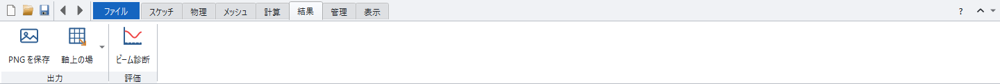
結果のタブを開くと、右上に結果の一覧、その下に表示の設定、中央に結果の図が出ます。一覧の行をクリックすると、その結果が表示されます。
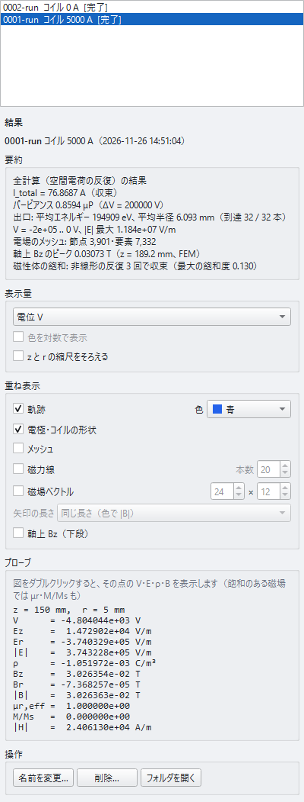
9.1 表示量
「表示量」で、色で表す量を選びます。
| 表示量 | 内容 |
|---|---|
| 電位 V | 電位の分布 |
| 電界の大きさ |E| | 電界の強さ（放電の目安に） |
| 空間電荷密度 ρ | ビームの電荷の分布。0 を中心に青（負 = 電子）〜白〜赤で表します |
| 磁場 Bz / Br / 磁場の大きさ |B| | 磁場の成分と大きさ（磁場のある結果だけ） |
| 実効の比透磁率 μr（磁性体） | 磁性体の B / (μ0 H)。飽和すると初期比透磁率より下がります（磁性体（飽和）がある結果だけ。要素ごとの値） |
| 飽和度 M/Ms（磁性体（飽和）） | 0（飽和していない）〜1（完全に飽和）。どこが飽和しているかが分かります（同上。6.6 節） |
| 表示なし | 形状と重ね表示だけ |
- 色を対数で表示: 小さい値まで色が付きます。ρ では、ビームの外側や下流の薄い所まで見えるようになります。
- z と r の縮尺をそろえる: 外すと、図を表示の枠いっぱいに広げます。細長い形状のときに便利です（4.7 節の図と同じ結果を、縮尺をそろえずに表示したのが下の図です）。
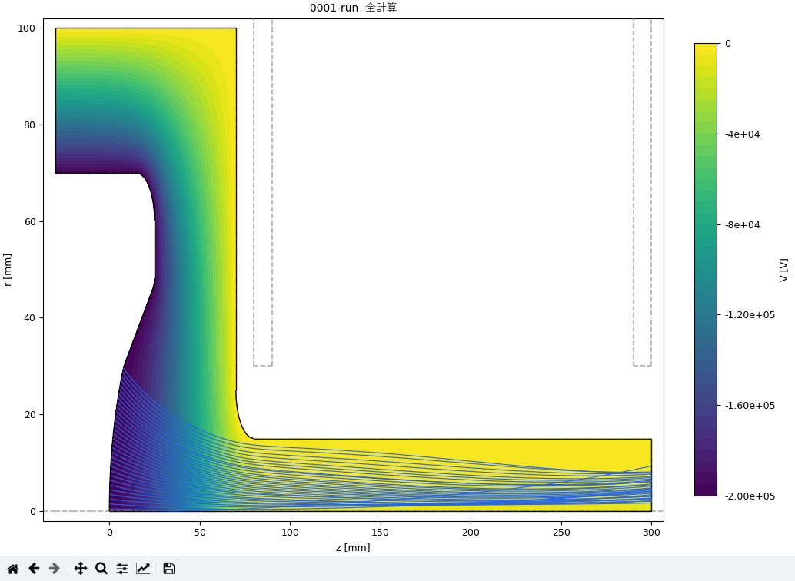
空間電荷密度 ρ（対数表示、軌跡は黒）:
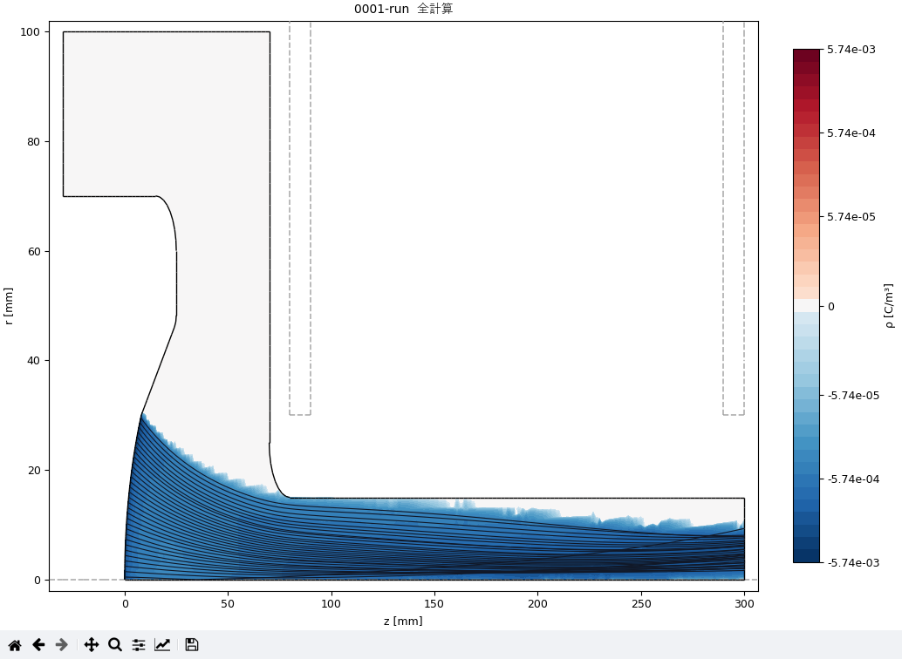
磁場の大きさ |B| に、磁力線と軸上の Bz（下段）を重ねたところ:
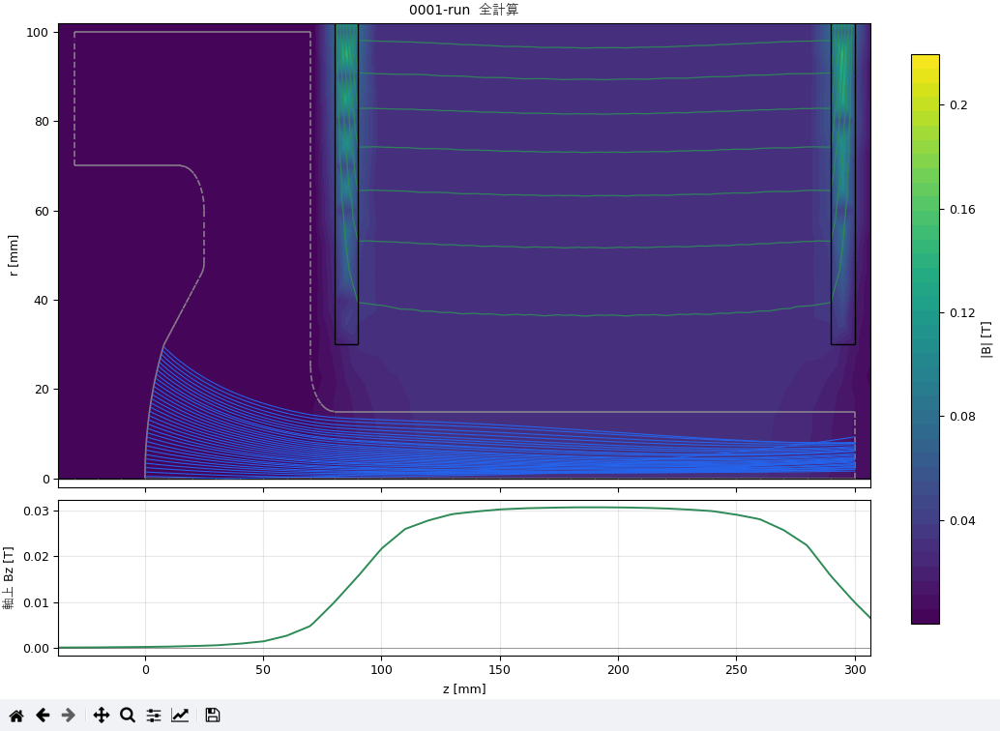
電界の大きさ |E| に、メッシュを重ねたところ:
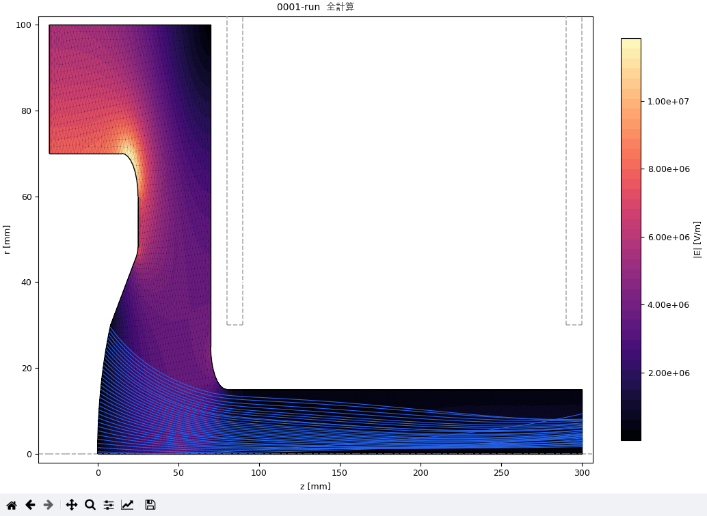
9.2 重ね表示
| 項目 | 内容 |
|---|---|
| 軌跡 | 電子の軌跡。「色」で青・赤・緑・紫・黒・白・粒子ごとに色分け を選べます（ρ の図では黒や赤が見やすい） |
| 電極・コイルの形状 | 電極・コイルの輪郭 |
| メッシュ | 計算に使ったメッシュ |
| 磁力線 | 磁力線（等間隔の線の間を同じ磁束が通ります）。本数を変えられます（FEM の磁場だけ） |
| 磁場ベクトル | 磁場の向きを格子の矢印で表します。格子の数と、矢印の長さの方式を選べます |
| 軸上 Bz（下段） | 対称軸の上の Bz(z) を、図の下に別のグラフで出します |
9.3 拡大・移動
図の下のツールバーで、拡大（虫眼鏡）・移動（十字の矢印）ができます。拡大した後で表示量や重ね表示を切り替えても、表示範囲はそのままです。家のアイコン（または表示のタブの「全体表示」・F キー）で、全体表示に戻ります。
9.4 プローブ（点の値を読む）
図をダブルクリックすると、その点に赤い ＋ が付き、右のパネルの「プローブ」に、その点の V・Ez・Er・|E|・ρ・ Bz・Br・|B| が出ます（ステータスバーにも出ます）。磁性体（飽和）がある結果では、磁場の領域の中の点の実効の比透磁率 μr,eff・飽和度 M/Ms・|H| [A/m] も出ます。領域の外では「計算領域の外です」と出ます。
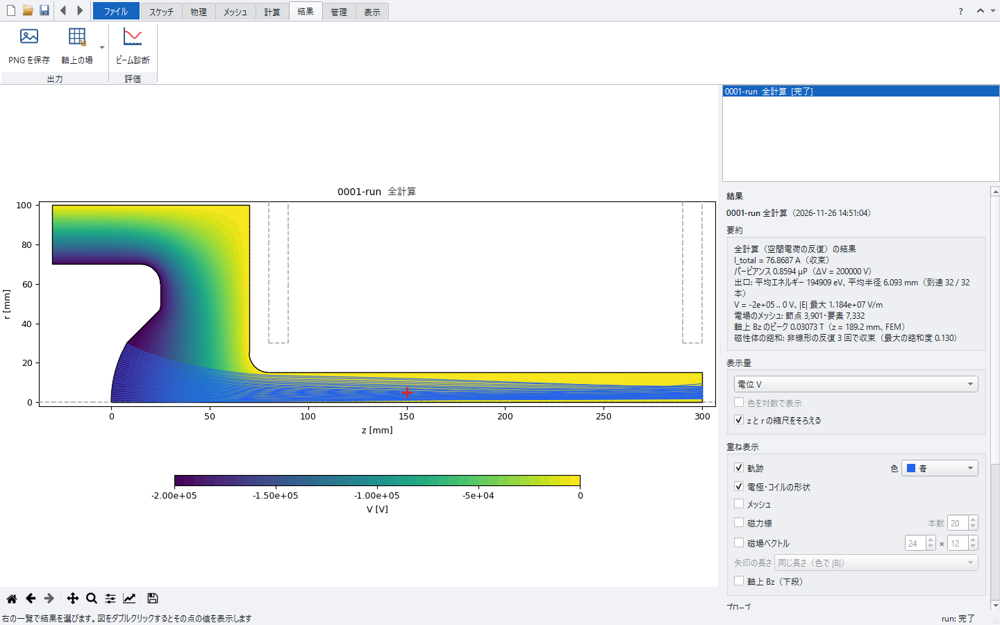
9.5 図と場の書き出し
リボンの「出力」のパネルで、図と場の値を書き出せます。
| ボタン | 内容 |
|---|---|
| PNG を保存 | 表示中の図を画像で保存します |
| 軸上の場 ▼ | 場の値を数値のファイルに書き出します。▼ で「軸上の場」（r = 0）・「線上の場」（2 点の間）・「面の場」（z × r の格子）を選べます |
場の書き出しでは、ダイアログで範囲（mm）・点数・書き出す場（V・Ez・Er・|E|・ρ・Bz・Br・|B|）・形式（TXT / HDF5）を選びます。既定の出力先は、データフォルダの exports\ です。ファイルの中の座標は SI（m）です。
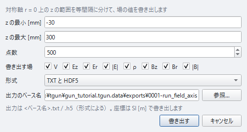
9.6 ビーム診断
リボンの「ビーム診断」で、ビームの性質を調べるウィンドウが開きます（全計算の結果だけ）。左上で見るものを選びます。
| 表示 | 内容 |
|---|---|
| エンベロープ | z ごとのビームの外縁の半径 r_edge と、rms 半径 r_rms |
| 位相空間（z 断面） | 「断面の z」を通る電子の位置 r と傾き r'（題名に rms エミッタンス） |
| カソード電流密度 J(r) | カソード面での放出電流密度の分布 |
| 要約 | 電流・パービアンス・粒子の数・出口の半径とエネルギー |
それぞれ「PNG 保存…」で図を、「TXT 書き出し…」で数値を保存できます。
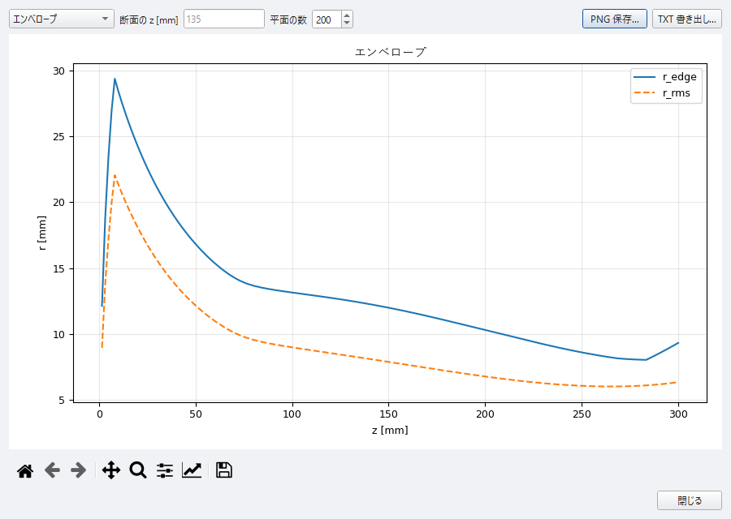
位相空間の例（10.2 節の DGUN test3 の z = 500 mm の断面）:
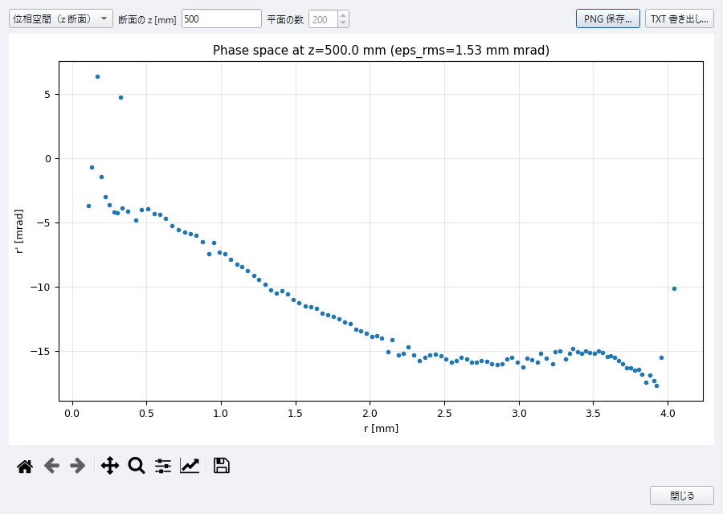
要約:
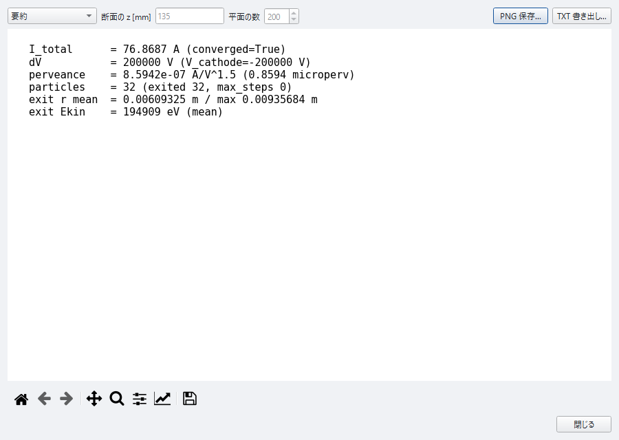
9.7 結果の管理
右のパネルの一番下の「操作」で、表示中の結果を扱います。
- 名前を変更…: 結果に分かりやすい名前を付けます（一覧と図の題名に出ます）。
- 削除…: 結果のフォルダごと消します（元に戻せません）。
- フォルダを開く: 結果のフォルダ（result.h5・log.txt など）を開きます。
一覧の行にマウスを乗せると、その結果を計算したときのパラメータの値が出ます。パラメータを変えながら計算したときに、どの結果がどの値のものかを確かめられます。
10. 取り込みと書き出し
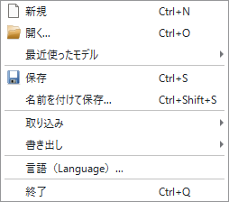
10.1 Version 2 / 1 のプロジェクトを取り込む
「ファイル」→「取り込み」→「TGUN v2 / v1 のプロジェクト…」で、Version 2 / 1 のプロジェクト（.tgunproj）から新しいモデルを作れます。
- 移すもの: 電場・磁場の形状、拘束と寸法、パラメータ（Version 1 の変数も）、領域の種別と値、電極、境界条件、メッシュの設定、計算の設定、磁場の与え方と取り込んだ磁場マップ。
- 移さないもの: メッシュと計算の結果（計算し直してください）。
- パラメータの単位は、使われ方から決めます（寸法に使っていれば mm、電圧に使っていれば V）。
- 拘束は「足しても形が動かない」ことを確かめてから移します。移すと形が変わってしまう拘束は外し、その旨を知らせます。
- 終わると、移したものの数と、知らせること（「詳細を表示」。ログにも出ます）が出ます。
取り込んだモデルは、まだ保存されていません。「名前を付けて保存…」で保存先を決めてください。元のプロジェクトは変わりません。
10.2 DGUN の入力を取り込む
DGUN の入力ファイル（geom.cod・dginput.dat・mag.dat）から、新しいモデルを作れます。
- 「ファイル」→「取り込み」→「DGUN の入力…」を選びます。
- 「geom.cod」の「参照…」でファイルを選びます。同じフォルダの dginput.dat・mag.dat、保存先、メッシュサイズ（DGUN の格子の刻み）が自動で入り、下にタイトル・格子・電位・放出面・磁場の扱いが表示されます。
- 必要なら「カソード近傍」の「細かくする」を入れます（精度が上がります。例 0.15 mm）。
- 「取り込む」を押すと、新しいモデルが作られ、保存先に保存されて開きます。
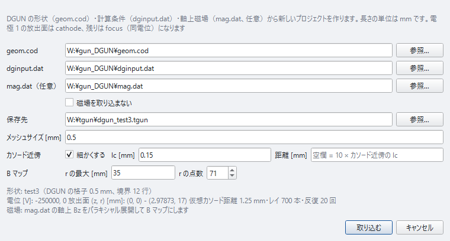
| 欄 | 内容 |
|---|---|
| geom.cod / dginput.dat | DGUN の形状と計算条件（必須） |
| mag.dat（任意） | 軸上の磁場。軸上 Bz を 2 次のパラキシャル展開で 2 次元の磁場マップにして使います |
| 磁場を取り込まない | 磁場なしで取り込みます |
| 保存先 | 作るモデルファイル（既にある名前は使えません） |
| メッシュサイズ / カソード近傍 | メッシュの設定（長さは mm） |
| B マップ | 磁場マップを作る範囲（r の最大）と点数 |
取り込むと、DGUN の電極 1 の放出面が cathode、電極 1 の残りが focus（同じ電位）、2 つ目の電極が anode
（3 つ目以降は elec3 …）になります。磁場は「磁場マップを取り込む」（データフォルダの inputs\ に置いた磁場マップ）になり、緩和係数 α はメッシュに合わせた目安に設定されます。
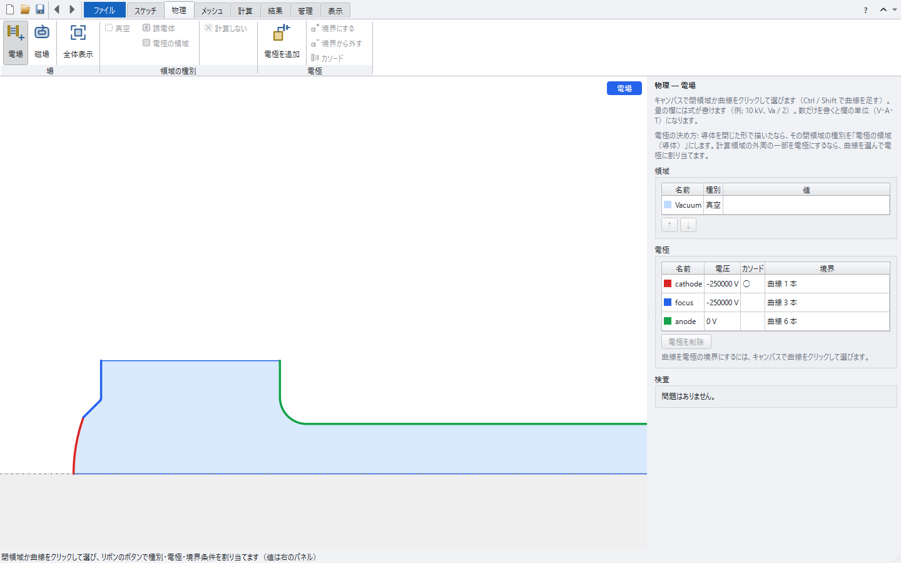
そのまま全計算できます（カソード近傍を細かくすると α が小さくなるので 150〜200 回ほどかかります）。下の図は DGUN test3 を計算した結果（空間電荷密度 ρ、対数表示）です。ビーム電流は 55.703 A （DGUN は 55.30 A。差 +0.7%。176 回で収束）でした。
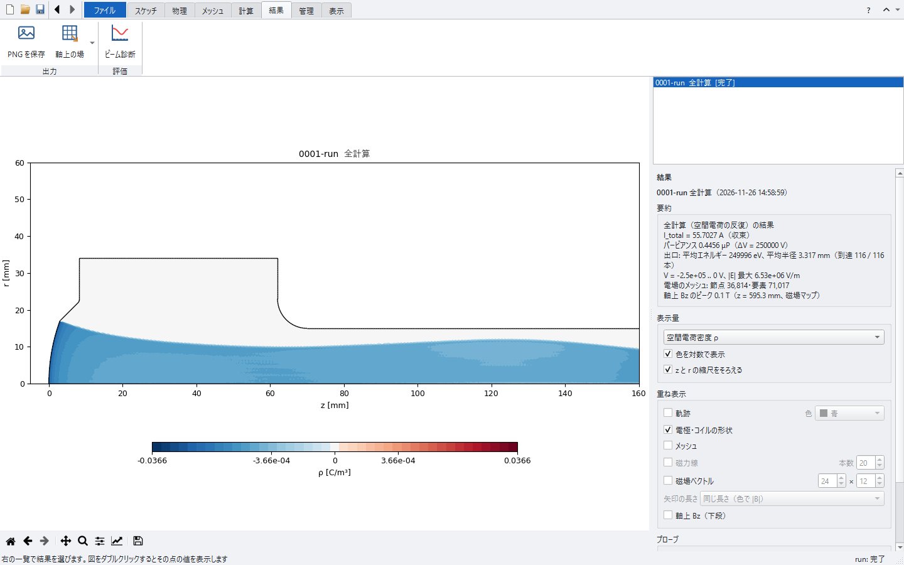
ヒント: DGUN の出力と比べるには、
examples\dgun_test3\compare_beam.py --result <結果の result.h5>を使います。ビーム電流・等電位線・表面の電界・エンベロープ・断面を DGUN の出力と比べられます（詳しくはexamples\dgun_test3\README.md）。
10.3 磁場マップを取り込む
外部の磁場のデータを、磁場として使えます。物理のタブで「場」を磁場にして、リボンの「マップ取り込み」を押します。取り込んだファイルはデータフォルダに保存するので、先にモデルを保存しておいてください。
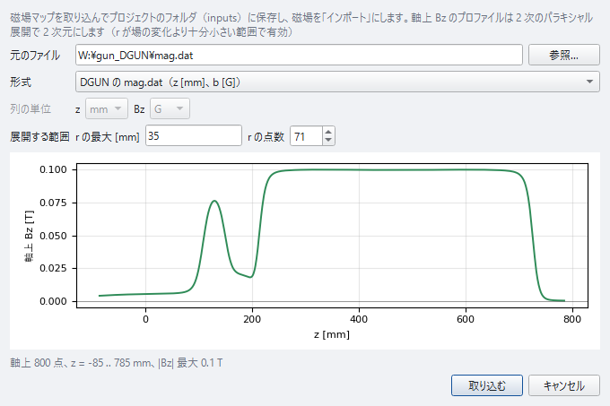
| 形式 | 内容 |
|---|---|
| TGUN の B マップ・結果（h5 の /bmap） | TGUN の磁場マップ、または別のモデルの「磁場のみ」の結果 |
| 4 列テキスト（z r Bz Br、SI） | 格子の上の磁場 |
| 軸上 Bz の 2 列テキスト（z Bz） | 軸上の磁場。列の単位を選びます。2 次のパラキシャル展開で 2 次元にします |
| DGUN の mag.dat | DGUN の軸上の磁場（z [mm]、b [G]） |
元のファイルを選ぶと、形式が自動で選ばれ、軸上 Bz のグラフが出ます。軸上の磁場から作るときは、「展開する範囲」（r の最大と点数）を決めます（r が磁場の変化の長さより十分小さい範囲で有効です）。「取り込む」を押すと、磁場マップがデータフォルダの inputs\ に保存され、磁場の与え方が「磁場マップを取り込む」になります。
10.4 EMRM-CAD へ書き出す
「ファイル」→「書き出し」→「EMRM-CAD のファイル（.mcad）…」で、形状を 3D CAD の EMRM-CAD で開けるファイルに書き出せます（回転体の 3D モデルや図面を作るときに使います）。
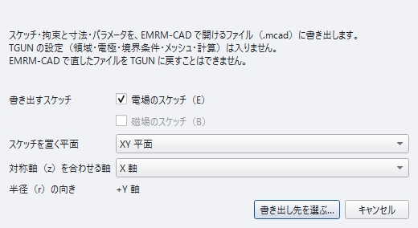
- 書き出すのは、スケッチ・拘束と寸法・パラメータです。TGUN の設定（領域・電極・境界条件・メッシュ・計算）は入りません。
- スケッチを置く平面（XY・XZ・YZ）と、対称軸（z）を合わせる軸を選べます。
- EMRM-CAD で直したファイルを TGUN に戻すことはできません（TGUN のモデルは
.tgunで、EMRM-CAD のファイルとは別のものです）。
10.5 CLI 用の入力を書き出す
「ファイル」→「書き出し」→「CLI 用の入力（.tgunproj）…」で、今のモデルをコマンドラインの tgun で計算できる形式に書き出せます（付録 B）。全計算の入力が作れないとき（たとえば磁場の指定が足りない）は、作れる分（電場だけ・磁場だけ）を書いて知らせます。
同じことは、GUI を開かずにコマンド tgun convert でもできます。こちらは、パラメータを書き換えた入力も作れます（付録 B.3）。
11. 保存とフォルダの構成
TGUN のモデルは、モデルファイルと、同じ名前のデータフォルダの 2 つで 1 組です。
gun_tutorial.tgun モデルファイル（形状・パラメータ・物理・設定）。開くのはこれ
gun_tutorial.tgun.data\ データフォルダ
command.log 計算・書き出しのコマンドの記録
mesh\e\<日時>\, mesh\b\<日時>\ メッシュのタブで作ったメッシュ
results\0001-run\ 計算 1 回分の結果（履歴として全部残ります）
result.h5 結果（場・軌跡など）
log.txt 計算のログ
model.tgunproj この計算に使った入力（CLI の形式）
result.json 結果の名前・状態・要約・計算したときのパラメータ
exports\ 書き出したファイル（場の値・PNG など）の既定の置き場所
inputs\ 取り込んだ磁場マップなど
- 自動保存: メッシュ生成と計算の前に、モデルは自動で保存されます。結果と、それを計算したときの形状・設定が必ず対になります。
- 名前を付けて保存: 別の名前で保存すると、データフォルダ（メッシュ・結果）ごと複製されます。
- モデルを移すとき:
.tgunと.tgun.dataを一緒に移してください。取り込んだ磁場マップはデータフォルダの中から参照しているので、移しても切れません。 - 最近使ったドキュメント: 「ファイル」→「最近使ったドキュメント」に、開いた・保存したモデルが新しい順に並びます。
- 開いている間は、モデルの隣に
名前.tgun.lockができます（同じモデルを 2 か所で開かないための印。閉じると消えます）。 - 一度に開けるモデルは 1 つです。計算中は、ほかのモデルを開いたり新規作成したりできません。
- OneDrive の中でも使えます。
12. 困ったときは
閉領域が塗られない
輪郭が閉じていません。線の端点が離れている所がないか確かめます（つながっていない端点は、橙の大きな点です）。点を別の点にドラッグして重ねるか、2 点を選んで「一致」の拘束を付けます。
計算のボタンが押せない・「計算を始められません」と出る
物理の指定が足りません。物理のタブの右のパネルの一番下の「検査」で内容を確かめてください。よくあるのは:
- カソードが無い（「is_cathode=True の電極がちょうど 1 必要です」）: 電極の表でカソードにする電極を選び、リボンの「カソード」を押します。
- 電極が無い・電極に境界が無い: 曲線を選んで「電極を追加」か「境界にする」。
- 磁場の与え方が「FEM で解く」なのに磁場の形状が無い: 磁場を使わないなら「磁場の与え方」を「なし」に。
「割り当てた閉領域が見つかりません」と出る
種別を割り当てた後で形状を大きく変えたため、どの閉領域のことか分からなくなっています。物理のタブで、その閉領域を選び直して種別を割り当て直すか、表の「見つからない」の行を消します。「閉領域を代表点で見つけ直しました」は警告です。割り当てが思ったとおりか、図の色で確かめてください。
値の欄で「単位」の誤りが出る
単位の無いパラメータを、電圧・電流などの欄に書いています。パラメータに単位を付ける（Va = 10 kV）か、欄に Vn * 1 V のように書きます（5.5 節）。
計算が収束しない（「未収束」になる）
緩和係数 α を小さくする（「目安を使う」）、最大反復回数を増やす（既定 300 回）、を試します。計算が発散しかけると、 α は自動で小さくなります（ログの「発散傾向を検知」、収束グラフの縦の破線）。メッシュを細かくしたときは、 α も小さくします。ログの「満たしていない判定」に、最後に残った量（dI・dJ・空間電荷の残差）が出ます。
ビーム電流の精度を上げたい
メッシュのタブの「カソード近傍の大きさ」が効果的です（全体を細かくするより、ずっと少ない要素数で精度が上がります）。細かくしたら α を目安に合わせます。
「非線形の磁場計算が N 回で収束しませんでした」と出る
磁性体（飽和）のある磁場の計算が、反復の上限までに収束しなかったという警告です。計算は最後の解で続きますが、磁場に誤差があります。Js・χ0 が極端な値でないか、磁場のメッシュが粗すぎないかを確かめてください。
磁性体を使った磁場の精度が気になる
磁性体の周りは、メッシュの粗さによる誤差が大きく効きます。磁場のメッシュの大きさを小さくして計算し直し、軸上の Bz などが変わらないことを確かめてください（6.6 節の注意）。
計算を途中で止めたい
計算のタブの「停止」（次の反復の区切りで止まる）か「強制停止」。どちらも結果は保存されません。
結果を削除できない
結果のファイル（result.h5）をほかのプログラム（HDF ビューアー、Python など）で開いていると消せません。閉じてから、もう一度削除してください。
モデルを開けない（「ほかで開いています」と出る）
同じモデルを、別の TGUN の窓で開いています。そちらを閉じてください。どこでも開いていないのに出るときは（異常終了の後など）、モデルと同じフォルダの 名前.tgun.lock を消してから開きます。
スケッチのタブの線が動かない・点が選べない
物理・メッシュ・計算のタブでは、形状は動かせません（選ぶだけです）。スケッチのタブに戻ってください。スケッチのタブでは、今の「場」（電場 / 磁場）の形状だけを編集できます。灰色の破線はもう一方の場の形状です。
操作を間違えた
「元に戻す」（Ctrl+Z）で、形状・パラメータ・物理・メッシュと計算の設定の変更を 1 つずつ戻せます。「やり直し」は Ctrl+Y です。
13. キーボードとマウスの操作一覧
ファイル・全体
| キー | 操作 |
|---|---|
| Ctrl+N | 新規 |
| Ctrl+O | 開く |
| Ctrl+S / Ctrl+Shift+S | 保存 / 名前を付けて保存 |
| Ctrl+Z / Ctrl+Y | 元に戻す / やり直し |
| F | 全体表示 |
| F1 | マニュアル |
| Ctrl+F1 | リボンの最小化 |
| F11 | 全画面表示 |
| Ctrl+Q | 終了 |
スケッチ（中央の画面）
| 操作 | 内容 |
|---|---|
| L / D / T | 線 / 寸法 / トリム |
| Tab / Enter（入力ウィンドウ） | 次の欄へ / 確定 |
| Enter・ダブルクリック | 連続線を終える |
| Esc | 描きかけを捨てる → ツールを終える |
| Delete | 選んだ物を削除 |
| クリック / Ctrl+クリック / Shift+クリック | 選択 / 切り替え / 追加 |
| 空白からドラッグ | 枠で選択（左 → 右: 全体が入る要素、右 → 左: 掛かる要素） |
| ドラッグ（点・曲線） | 拘束を保ったまま移動 |
| ダブルクリック（寸法の値） | 寸法の値（式）を変える |
| Ctrl+クリック（作図中） | そのクリックでは自動の拘束を付けない |
| マウスホイール / 中ボタンのドラッグ | 拡大・縮小 / 表示の移動 |
物理（中央の画面）
| 操作 | 内容 |
|---|---|
| クリック | 閉領域か曲線を選ぶ |
| Ctrl+クリック / Shift+クリック | 曲線を選択に足す |
結果の図
| 操作 | 内容 |
|---|---|
| ダブルクリック | プローブ（その点の値を表示） |
| 図の下のツールバー | 拡大・移動・ホーム（全体表示）・図の保存 |
付録 A 用語
| 用語 | 意味 |
|---|---|
| 軸対称 | z 軸のまわりに回転させた形。r ≥ 0 の半面だけを計算します |
| 場（電場 / 磁場） | 電場の形状（電極・真空）と磁場の形状（コイル・磁性体・空気）の、それぞれの計算の対象 |
| モデル | TGUN のファイル（名前.tgun）。形状・パラメータ・物理・設定が入ります |
| スケッチ | 形状を描いた図。電場用と磁場用の 2 枚があります |
| 閉領域 | 線で囲まれた領域。種別を割り当てる単位です |
| 計算領域 | メッシュを切って場を解く範囲（真空・誘電体・空気・コイル・磁性体の閉領域） |
| 拘束 / 寸法 | 図形どうしの関係（水平・一致…）/ 長さ・角度などの値。形を決めます |
| パラメータ | 名前を付けた値。寸法や電圧などの式で使えます |
| 境界条件 | 計算領域の縁の曲線に与える条件。電極（電圧を固定）・自然境界・A = 0 など |
| カソード | 電子を放出する電極。モデルにちょうど 1 つ |
| 電極の領域 | 導体のかたまり。メッシュを切らず、輪郭がその電極の電位になります |
| A = 0 | 磁場の境界条件 A_θ = 0。磁束がその線を横切りません |
| 総電流 [A·turn] | コイルの巻数 × 電流 |
| 磁性体 / 磁性体（飽和） | 磁化して磁場を強める材料（鉄など）。比透磁率 μr 一定で扱うか、飽和を考えるか |
| 飽和磁化 Js | 強い磁場で磁化が近づく上限（μ0Ms [T]）。純鉄で約 2.15 T |
| 初期磁化率 χ0 | 弱い磁場での磁化のしやすさ。初期比透磁率は 1 + χ0 |
| 飽和度 M/Ms | 磁化 M の飽和磁化に対する割合。0 〜 1 |
| 実効の比透磁率 μr,eff | 飽和を含めた B / (μ0 H)。飽和すると下がります |
| メッシュ | 計算領域を分けた三角形 |
| 空間電荷 ρ | ビームの電子が作る電荷の分布。電場を弱め、電流を制限します |
| 反復・緩和係数 α | 空間電荷と軌道を交互に計算し直してつり合わせる手順 / そのときの更新の割合 |
| 収束 | 反復しても電流などがもう変わらなくなった状態 |
| パービアンス | I / V^1.5（μP = 10⁻⁶ A/V^1.5）。電子銃の性能を表す量 |
| エンベロープ | z ごとのビームの外縁の半径 |
| エミッタンス | 位相空間（r と r'）でのビームの広がり。ビームの質の指標 |
| 磁場マップ | 格子の上の磁場の値（Bz, Br）。追跡に使います |
付録 B コマンドライン（CLI）
TGUN の計算は、画面を開かずにコマンドラインからも実行できます。GUI の計算も、内部では同じ計算を別のプロセスで実行しているので、結果は同じです。コマンドラインは、次のようなときに使います。
- パラメータ（電圧・寸法・コイルの電流など）を変えながら、同じ計算を何度も繰り返す（スイープ）
- 計算を他のプログラム（Python・PowerShell のスクリプトなど）から呼ぶ
- 結果の数値（軸上の場・ビームの包絡線など）をテキストで取り出す
- GUI で行った計算を、後からそのまま再現する
B.1 コマンドの名前と基本
| 使う環境 | コマンド | 例 |
|---|---|---|
| 配布版 | TGUN.exe |
TGUN.exe run -p gun.tgunproj |
開発環境（pip install -e 済み） |
tgun または python -m tgun |
tgun run -p gun.tgunproj |
この付録では tgun と書きます。配布版では TGUN.exe に読み替えてください（コマンドプロンプトや PowerShell で
TGUN のフォルダに移るか、TGUN.exe をフルパスで書きます）。
- 何も付けずに実行すると、GUI が開きます。
tgun 名前.tgunは、そのモデルを GUI で開きます。 tgun -hでコマンドの一覧、tgun <コマンド> -hでそのコマンドの引数が出ます。-p・-i・-oは、--project（入力）・--input（結果）・--output（出力）と書くこともできます。- 長さの引数は、どのコマンドも SI 単位（m） です（GUI の mm ではありません）。例外は DGUN の取り込み（mm）だけです。
まず試す（例題のモデルから入力を作って計算する。15 秒ほど）:
tgun convert examples\gun_with_solenoid\gun_with_solenoid.tgun -o work\gun.tgunproj
tgun run -p work\gun.tgunproj -o work\gun.h5
tgun beam -i work\gun.h5 --what summary
29 回の反復で収束し、最後に I_total = 7.686871e+01 A (converged) と出ます（GUI のチュートリアルと同じ値です）。
コマンドの一覧:
| コマンド | すること | 入力 | 出力 |
|---|---|---|---|
params |
モデルのパラメータの一覧を出す | .tgun |
画面 |
convert |
モデルから CLI 用の入力を作る | .tgun |
.tgunproj |
run |
全計算（磁場 → 空間電荷の収束） | .tgunproj |
.h5 |
solve-e |
電場のみ（空間電荷なし） | .tgunproj |
.h5 |
solve-b |
磁場のみ | .tgunproj |
.h5 |
mesh |
メッシュだけを作る | .tgunproj |
.msh |
info |
結果のファイルの中身の一覧 | .h5 |
画面 |
plot |
結果の図 | .h5 |
.png |
export |
場の数値の書き出し（軸上・線上・面） | .h5 |
.txt・.h5 |
beam |
ビーム診断（要約・包絡線・断面） | .h5 |
画面・.txt・.png |
import-dgun |
DGUN の入力を CLI 用の入力に変える | geom.cod ほか |
.tgunproj |
import-b |
磁場マップ（テキスト）を .h5 に変える |
テキスト | .h5 |
version |
版と構成を出す | — | 画面 |
selftest |
小さな計算を流して動作を確かめる | — | 画面 |
B.2 2 種類のファイル: モデルファイル（.tgun）と CLI 用の入力（.tgunproj）
モデルファイル 名前.tgun |
CLI 用の入力 名前.tgunproj |
|
|---|---|---|
| 作るもの・読むもの | GUI | 計算のコマンド（run・solve-e・solve-b・mesh） |
| 中身 | スケッチ・拘束と寸法・パラメータと式・物理の指定・設定 | 計算に要るものだけ（点の座標・境界の名前・領域の値・電極の電圧・設定） |
| パラメータ | 式のまま持つ | 評価した後の数値（式は入らない） |
| 形式 | TGUN のモデルの形式 | JSON（テキスト。エディタで読める） |
計算のコマンドは .tgunproj を読みます。.tgunproj を手に入れる方法は 4 つあります。
tgun convertでモデルから作る（B.3 節）。GUI を開かずに作れ、パラメータも書き換えられます。- GUI の「ファイル」→「書き出し」→「CLI 用の入力（.tgunproj）…」（10.5 節）。
- GUI で計算した結果のフォルダにある
model.tgunproj（その計算に使った入力そのもの。B.7 節）。 tgun import-dgunで DGUN の入力から作る（B.6 節）。
注意:
.tgunprojを GUI に読み込むときは「開く」ではなく「取り込み」（10.1 節）です。.tgunprojには式やパラメータが無いので、取り込んだモデルの形は座標だけになります。形や値を変えていく元は、モデルファイル（.tgun）の側に置いてください。
B.3 モデルから入力を作る: params と convert
パラメータを見る
tgun params gun.tgun
gap = 10.0 mm -> 10.00 mm
R = 5.0 mm -> 5.00 mm
Va = 10 kV -> 10000.00 V
左から、名前・書いてある式・評価した値です。
入力を作る
tgun convert gun.tgun -o work\gun.tgunproj
書き出しました: work\gun.tgunproj（全計算の入力）
計算: tgun run -p "work\gun.tgunproj" -o 結果.h5
| 引数 | 意味 |
|---|---|
モデル |
モデルファイル（名前.tgun） |
-o 出力 |
出力のファイル。省くと、モデルの隣の 名前_cli.tgunproj。フォルダが無ければ作ります |
--set 名前=式 |
パラメータを書き換えてから作ります（何度でも書けます） |
--scope |
作る入力。run = 全計算、e = 電場だけ、b = 磁場だけ、auto = 作れるもの（既定） |
- モデルは変わりません。
--setの書き換えは、作った.tgunprojにだけ効きます。 - GUI でそのモデルを開いている最中でも実行できます（読むのは、最後に保存した内容です）。
--scope autoは、全計算 → 電場だけ → 磁場だけの順に、作れるものを作ります（電場の形状の無いモデルからは、磁場だけの入力ができます）。何の入力ができたかと、その入力で使うコマンドが画面に出ます。- 取り込んだ磁場マップを使うモデルでは、マップのファイルの場所（モデルのデータフォルダの中）がフルパスで入ります。
パラメータを書き換える（--set）
tgun convert gun.tgun -o work\v12.tgunproj --set "Va=12 kV" --set "gap=8 mm"
パラメータ: Va = 12 kV（モデルでは 10 kV）
パラメータ: gap = 8 mm（モデルでは 10.0 mm）
書き出しました: work\v12.tgunproj（全計算の入力）
- 式の書き方は、GUI のパラメータの表と同じです（5.5 節）。単位を付けて書けます（
12 kV・8 mm）。数だけを書くと、そのパラメータの単位が付きます（--set gap=8は 8 mm）。 - 他のパラメータを使った式も書けます（
--set "gap=R + 3 mm"）。 - 空白を含む式は、全体を
"で囲みます（--set "Va=12 kV"）。 - 書き換えると、寸法にそのパラメータを使っているスケッチの形も、GUI で値を変えたときと同じように変わります。
- 書き換えた結果を計算の前に確かめるには、
tgun params gun.tgun --set "gap=R + 3 mm"とします（書き換えた後の一覧が出ます。モデルは変わりません）。
無いパラメータの名前を書いたとき、式が誤っているとき、書き換えた値では形が作れないときは、理由を表示して終了コード 1 で終わります（ファイルは作りません）。
B.4 計算する: run・solve-e・solve-b・mesh
tgun run -p gun.tgunproj -o gun.h5 # 全計算（磁場 → 電場と軌道の反復）
tgun solve-e -p gun.tgunproj -o gun_e.h5 # 電場のみ（空間電荷なし = ラプラス方程式）
tgun solve-b -p coil.tgunproj -o coil.h5 # 磁場のみ
tgun mesh -p gun.tgunproj --domain e # 電場のメッシュだけを作る（--domain b で磁場）
| 引数 | コマンド | 意味 |
|---|---|---|
-p 入力 |
すべて | CLI 用の入力（.tgunproj） |
-o 出力 |
すべて | 出力のファイル。省くと、入力の隣の 名前_result.h5（mesh は 名前_e.msh・名前_b.msh） |
--reuse-mesh |
run・solve-e |
入力の隣に前に作ったメッシュ（名前_e.msh・名前_b.msh）があれば、作り直さずに使います |
--max-iter 回数 |
run |
反復の回数の上限を、入力に書いてある値の代わりに使います |
--alpha 値 |
run |
緩和係数 α を、入力に書いてある値の代わりに使います |
--domain e/b |
mesh |
メッシュを作る場（電場・磁場） |
注意:
-oを省いたときの名前は、run・solve-e・solve-bのどれも名前_result.h5です。同じ入力で続けて実行すると上書きされるので、-oで名前を付けることを勧めます。
-p にモデルファイル（.tgun）をそのまま渡すと、convert で入力を作るように案内して終わります（計算のコマンドが読むのは
.tgunproj だけです）。
入力の隣には、メッシュのファイル（名前_e.msh・名前_b.msh と、それぞれの .domain.json）もできます。形状やメッシュの設定を変えたときは、--reuse-mesh を付けないでください（付けると古いメッシュのまま計算します）。
run の画面の出力:
mesh written: gun_b.msh
coil 'coil_0': I = 5000 A, mesh area = 0.009 m^2, J_theta = 555556 A/m^2
magnetic material 'iron_sat_1': Frohlich-Kennelly (Js = 1.9 T, chi0 = 1000)
solving nonlinear magnetostatics (A_theta, Newton)...
...
非線形の磁場計算: 3 回で収束しました（残差 1.67e-14）
B map sampled on 201x101 grid
cathode refine: size = 1 mm, dist = 10 mm
mesh written: gun_e.msh
dt = 2.630e-12 s, electrodes = {'Cathode': -200000.0, 'Wehnelt': -200000.0, 'Anode': 0.0}, cathode = 'Cathode'
[iter] k=1 I_total=1.555862e+02 dI=inf dJ=inf drho=1.000e+00 res=1.000e+00
[iter] k=2 I_total=1.612142e+02 dI=8.293e-02 dJ=1.898e-01 drho=6.280e-01 res=8.483e-01
...
[iter] k=29 I_total=7.686871e+01 dI=5.137e-05 dJ=6.014e-05 drho=2.716e-04 res=6.791e-04
[iter] converged at k=29
result written: gun.h5
I_total = 7.686871e+01 A (converged)
[iter] の行は反復ごとの値で、GUI の収束グラフと同じものです（8.2 節）。k は反復の番号、
I_total は放出電流 [A]、dI・dJ は電流と電流密度の前の回からの変化（相対値）、drho は空間電荷の変化、
res は空間電荷の残差です。最後の行が結果で、(converged) なら収束、(NOT converged) なら反復の上限で打ち切りです。
終了コード（スクリプトで結果を判定するのに使います）:
| 終了コード | 意味 |
|---|---|
| 0 | 正常に終わった（run は収束した） |
| 1 | 誤り（入力の検証の誤り・ファイルが無いなど。理由を表示します） |
| 2 | 引数の誤り |
| 3 | run が収束しなかった（結果のファイルは書かれます。途中の状態として見られます） |
| 4 | 試用期間が終わっている（配布版） |
計算の設定（α・許容値・反復の上限・軌道の時間刻みなど）は、入力の中に書いてあります。モデルの計算の設定（8.3 節）が、convert のときにそのまま入ります。--max-iter・--alpha 以外の設定を変えるときは、
GUI の計算のタブでモデルの設定を変えて保存し、convert し直します。
B.5 結果を見る: info・plot・export・beam
どのコマンドも、-i に結果のファイル（.h5）を渡します。コマンドラインで計算した結果だけでなく、GUI で計算した結果（モデルのデータフォルダの results\0001-run\result.h5 など。11 章）にも使えます。
info — 中身の一覧
tgun info -i gun.h5
結果のファイルに入っているデータの名前と大きさが出ます。主なものは次のとおりです（値はすべて SI 単位）。
| グループ | 中身 |
|---|---|
/emesh・/bmesh |
電場・磁場のメッシュ（節点の座標・三角形・境界と領域） |
/electrostatics |
節点の電位 V、電界 E_nodal、空間電荷 rho_nodal |
/magnetostatics |
節点のベクトルポテンシャル A_theta、磁束密度 B_nodal（飽和の材料があれば、要素ごとの実効の μr・飽和度も） |
/bmap |
軌道の計算に使った磁場のマップ（z・r・Bz・Br） |
/emission |
カソードの面ごとの電流密度 J と電流 I |
/particles |
軌跡（位置と運動量）、粒子ごとの電流、行き先 |
/convergence |
反復ごとの I_total・dI_rel・dJ_rel・drho_rel・alpha・rho_res |
/parameters |
属性に、収束した電流 I_total、収束したか converged、計算に使った入力 project_json |
plot — 図
tgun plot -i gun.h5 --what traj -o traj.png
--what |
図 |
|---|---|
V |
電位（等電位線） |
E |
電界の大きさ |
rho |
空間電荷の密度 |
traj |
軌跡 |
J |
カソードの電流密度の分布 |
conv |
収束の履歴 |
B |
磁束密度の大きさ・磁力線・矢印、軸上の Bz |
-o を省くと、結果の隣の 名前_<what>.png に書きます。--dpi で解像度（既定 150）を変えられます。
--what B では、--b-levels 本数（磁力線の本数。既定 20、0 で描かない）、--b-vectors NZ,NR（矢印の格子。既定 24,12、0 で描かない）、--b-vec-scale unit/mag（矢印の長さを揃える / 大きさに比例させる）が使えます。
export — 場の数値
tgun export -i gun.h5 -o axis --shape axis --fields V,Ez,Bz --format txt
tgun export -i gun.h5 -o line --shape line --p1 0.0,0.001 --p2 0.04,0.001 --npts 200
tgun export -i gun.h5 -o area --shape area --z-range 0,0.04 --r-range 0,0.005 --nz 200 --nr 50
| 引数 | 意味 |
|---|---|
-o 名前 |
出力の名前（拡張子は付けません。名前.txt・名前.h5 ができます） |
--shape |
axis = 軸上（既定）、line = 2 点を結ぶ線の上、area = 長方形の範囲の格子 |
--fields |
書き出す量。V,Ez,Er,Emag,rho,Bz,Br,Bmag からカンマで区切って選びます（省くと、結果にあるものすべて） |
--z-range zmin,zmax |
z の範囲 [m]（axis・area。省くと全体） |
--r-range rmin,rmax |
r の範囲 [m]（area） |
--p1 z,r・--p2 z,r |
線の始点・終点 [m]（line） |
--npts |
点の数（axis・line。既定 500） |
--nz・--nr |
格子の分割数（area。既定 200・100） |
--format |
txt・h5・both（既定） |
テキストの出力（--shape axis）:
# TGUN field export (shape=axis, SI units)
# source_file = gun.h5
# fields = V Ez Bz
# units = SI (z,r[m] V[V] E[V/m] rho[C/m^3] B[T])
# Columns: s distance z r V Ez Bz mask
0.000000000e+00 0.000000000e+00 0.000000000e+00 0.000000000e+00 0.000000e+00 -3.514372e+05 2.779186e-03 1
2.500000000e-01 1.000000000e-02 1.000000000e-02 0.000000000e+00 8.982020e+03 -6.582072e+05 9.952325e-03 1
# で始まる行は説明で、Columns: の行が列の名前です。s は線の上の位置（0〜1）、distance は始点からの距離 [m]、mask は、その点が電場の計算領域の中なら 1・外（電極の中など）なら 0 です。
beam — ビーム診断
tgun beam -i gun.h5 --what summary
tgun beam -i gun.h5 --what envelope --z-planes 0.011,0.04,100 -o envelope.txt --plot envelope.png
tgun beam -i gun.h5 --what cut --cut 0.03 -o cut.txt --plot phase.png
--what |
出すもの | 引数 |
|---|---|---|
summary |
要約を画面に出す（-o でファイルにも） |
— |
envelope |
z の面ごとのビームの半径 | --z-planes zmin,zmax,面の数 [m]（省くと全体を 200 面） |
cut |
1 つの z の面を通る粒子の一覧（位相空間） | --cut z [m]（必須） |
-o を省くと、結果の隣の 名前_envelope.txt・名前_cut.txt に書きます。--plot を付けると図（.png）も作ります。
summary の出力:
I_total = 76.8687 A (converged=True)
dV = 200000 V (V_cathode=-200000 V)
perveance = 8.5942e-07 A/V^1.5 (0.8594 microperv)
particles = 32 (exited 32, max_steps 0)
exit r mean = 0.00609325 m / max 0.00935684 m
exit Ekin = 194909 eV (mean)
envelope の列は z・r_edge（最も外の粒子の半径）・r_rms（電流で重みを付けた rms 半径）・I_pass（その面を通る電流 [A]）・n_rays（通る粒子の数）です。cut の列は pid（粒子の番号）・r・rp（傾き dr/dz）・I（粒子の電流 [A]）・ekin_eV（運動エネルギー [eV]）で、画面に rms エミッタンスも出ます。GUI の「ビーム診断」（9.6 節）と同じ値です。
B.6 取り込み: import-dgun と import-b
DGUN の入力から CLI 用の入力を作る
tgun import-dgun --geom geom.cod --dginput dginput.dat --mag mag.dat -o test3.tgunproj --cathode-mesh-size 0.25
| 引数 | 意味 |
|---|---|
--geom・--dginput |
DGUN の形状（geom.cod）と入力（dginput.dat）。必須 |
--mag |
軸上の磁場（mag.dat）。省くと dginput.dat の中の磁場を使います |
--no-b |
磁場を取り込みません |
-o |
出力（.tgunproj）。必須 |
--mesh-size |
メッシュの大きさ [mm]（既定 1.0） |
--cathode-mesh-size |
カソード近傍のメッシュの大きさ [mm]（省くと細かくしません） |
--refine-dist |
細かくする距離 [mm]（省くと、カソード近傍の大きさの 10 倍） |
--rmax・--nr |
磁場のマップの r の上限 [mm]（既定 35）と分割数（既定 71） |
できた .tgunproj は、そのまま tgun run -p で計算できます。GUI で形や設定を見るには、GUI の「ファイル」→「取り込み」→「DGUN の入力…」（10.2 節）を使ってください（同じ変換をして、モデルとして保存します）。
磁場マップを .h5 に変える
tgun import-b --file bmap.txt -o bmap.h5
テキストの磁場マップを、TGUN の磁場マップの形式（.h5）に変えます。GUI の「マップ取り込み」（10.3 節）は、これと同じことをしてモデルに登録します。
B.7 GUI の計算を再現する
GUI で計算すると、結果のフォルダ（モデルのデータフォルダの results\0001-run\ など）に、その計算に使った入力
model.tgunproj が置かれます。データフォルダの command.log には、同じ計算のコマンド（例 tgun run -p model.tgunproj -o result.h5）が記録されます。結果のフォルダでそのコマンドを実行すると、同じ計算を再現できます（結果を上書きしないように、-o は別の名前にしてください）。
cd gun.tgun.data\results\0001-run
tgun run -p model.tgunproj -o again.h5
model.tgunproj には、そのときのパラメータを評価した後の数値が入っています。モデルをその後で変えても、前の計算の入力は残ります。磁性体（飽和）の領域は、"b_model": "fk"・"fk_js"（Js [T]）・"fk_chi0"（χ0）と書かれます。
B.8 スクリプトの例: パラメータを振る
アノードの電圧 Va を 8・10・12・15 kV に変えて、放出電流を並べる例です。モデル gun.tgun は変わりません。
PowerShell:
foreach ($v in 8, 10, 12, 15) {
tgun convert gun.tgun -o "sweep\v$v.tgunproj" --set "Va=$v kV" | Out-Null
tgun run -p "sweep\v$v.tgunproj" -o "sweep\v$v.h5" | Select-String "I_total = "
}
Select-String "I_total = " は、最後の結果の行（I_total = 1.336526e+00 A (converged) など）だけを取り出します。配布版では tgun を TGUN.exe のフルパスにしてください（例 & "C:\TGUN\TGUN.exe" convert …）。
Python（終了コードで収束を確かめ、結果のファイルから電流を読む）:
import subprocess
import h5py # pip install h5py
TGUN = "tgun" # 配布版では r"C:\TGUN\TGUN.exe"
for va in (8, 10, 12, 15):
proj, h5 = f"sweep/v{va}.tgunproj", f"sweep/v{va}.h5"
subprocess.run([TGUN, "convert", "gun.tgun", "-o", proj, "--set", f"Va={va} kV"], check=True)
code = subprocess.run([TGUN, "run", "-p", proj, "-o", h5]).returncode # 0 = 収束、3 = 収束せず
with h5py.File(h5, "r") as f:
current = f["parameters"].attrs["I_total"]
print(f"Va = {va} kV: I = {current:.4f} A" + ("" if code == 0 else "（収束せず）"))
平板のダイオード（間隔 10 mm・半径 5 mm）のモデルでの出力:
Va = 8 kV: I = 1.3365 A
Va = 10 kV: I = 1.8662 A
Va = 12 kV: I = 2.4533 A
Va = 15 kV: I = 3.4264 A
空間電荷制限の電子銃では、電流は電圧の 1.5 乗に比例します（パービアンスが一定）。上の出力でも、15 kV と 8 kV の電流の比 2.564 が、電圧の比の 1.5 乗（2.567）とよく合っています。
ヒント: 2 つ以上のパラメータを振るときは、
--setを並べます（--set "Va=12 kV" --set "gap=8 mm"）。コイルの電流や電極の電圧も、モデルでパラメータにしておけば（欄にVa・I_coilのように名前を書く。例題 gun_with_solenoid はそうなっています）、同じように振れます。
B.9 スクリプトの例: 目標に合わせる（パービアンスの自動調整）
パラメータを動かして、結果を目標の値に合わせることもできます。例題 gun_with_solenoid のフォルダの
tune_perveance.py は、アノードの位置 d_an を動かして、パービアンスを 1 µP に合わせます。
cd examples\gun_with_solenoid
python tune_perveance.py
目標 1 uP（許す差 0.5%）。d_an を動かします（今 70 mm）
d_an = 70.0000 mm -> 0.8594 uP（-14.06%）
d_an = 63.0000 mm -> 1.0342 uP（+3.42%）
d_an = 64.2715 mm -> 0.9960 uP（-0.40%）
合いました: d_an = 64.27 mm
この値の入力（コイルあり）: work\tuned.tgunproj
モデルに反映するには、GUI のパラメータの表で d_an を 64.27 mm にします
計算 3 回（約 50 秒）で合います。スクリプトがしているのは、次の 3 つのコマンドの繰り返しです（Python の標準ライブラリだけで動きます。モデルは変わりません）。
tgun convert gun_with_solenoid.tgun -o work\case.tgunproj --set "d_an=63 mm" --set "I_coil=0"
tgun run -p work\case.tgunproj -o work\case.h5
tgun beam -i work\case.h5 --what summary
tgun beam --what summaryの出力のperveance = …の行を読んで、パービアンスを得ます。- パービアンスは磁場に依らないので、調整の間は
--set "I_coil=0"でコイルを切り、磁場の計算を省いています。 - 次に試す値は、セカント法（2 点を結ぶ直線が目標と交わる所）で決めます。パービアンスはおよそ距離の −2 乗で変わるので、対数で直線を引くと数回で合います。
- 最後に、合った値でコイルを入れた入力
work\tuned.tgunprojを作ります。
| 引数 | 意味（既定） |
|---|---|
--target 値 |
目標のパービアンス [µP]（1.0） |
--param 名前 |
動かすパラメータ（d_an）。例: --param Rc2 |
--tol 値 |
許す相対の差（0.005 = 0.5%） |
--step 値 |
2 点目 = 今の値 × これ（0.9） |
--max-evals 回数 |
計算の回数の上限（8） |
--tgun コマンド |
TGUN のコマンド。配布版では --tgun "C:\TGUN\TGUN.exe" |
自分のモデルで使うときは、モデルのパスを最初の引数に書きます（python tune_perveance.py my_gun.tgun --param gap）。目標にする量を変えるとき（出口のビームの半径など）は、スクリプトの perveance の関数を、tgun beam の別の行を読むように書き換えます。
B.10 その他のコマンド
tgun version # 版と構成（Python・使っているライブラリ・メッシュ生成のプログラム）
tgun selftest # 小さな計算（平板ダイオードのメッシュと全計算）を流して「結果: OK」と出れば正常
- うまく動かないときは、
tgun versionとtgun selftestの出力を添えて知らせてください。 tgun job …は、GUI が計算のために自分で起動するコマンドです（手で実行するものではありません）。- ファイルが無い・引数の値が誤っているなどのときは、
エラー:で始まる 1 行の理由を表示して終了コード 1 で終わります。不具合の報告のために Python のエラーの表示が要るときは、環境変数TGUN_TRACEBACKに 1 を入れて実行します。 - 配布版の
TGUN.exeは、試用期間が終わるとコマンドラインの計算も実行できません（versionと-hは動きます）。
付録 C Version 2 から移る人へ
Version 3 では、形状を描く仕組みを 3D CAD の EMRM-CAD のスケッチに入れ替えました。計算の中身（場の計算・放出・追跡・収束判定）は Version 2 と同じです。
変わった点
| 項目 | Version 2 | Version 3 |
|---|---|---|
| モデル | 名前.tgunproj と 名前.tgunproj.data\ |
名前.tgun と 名前.tgun.data\ |
| 形状の作図 | TGUN 独自の作図 | EMRM-CAD と同じスケッチ（入力ウィンドウ・自動の拘束・多くの作図と修正のツール） |
| 線の交差 | 交差した所で曲線を自動で分割 | 曲線は切らない。交差で分かれた領域を閉領域として求める（拘束が外れにくい） |
| パラメータ | 数だけ（単位なし） | 単位付き（10 mm・10 kV）。三角関数は度 |
| 値の欄 | 数値か式 | 数値・単位付きの数・式（数だけならその欄の単位） |
| 電場 / 磁場の切り替え | 画面の右上 | リボンの左端の「場」 |
| 結果の一覧 | 左のブラウザ | 結果のタブの右上 |
| 長さの単位 | mm・cm・m・inch から選ぶ | mm（式では 1 in・2 cm のように単位を書けます） |
| 画面の言語 | 日本語 / 英語 | 日本語 |
Version 2 のプロジェクトを使うには: 「ファイル」→「取り込み」→「TGUN v2 / v1 のプロジェクト…」で取り込み、
.tgun として保存します（10.1 節）。元のプロジェクトは変わりません。メッシュと計算の結果は移らないので、計算し直してください。
Version 3 に無いもの: プロジェクトの外の結果ファイル（CLI で計算した .h5）を開いて表示する機能は、まだありません。